Manual do Sistema
Sistema projetado e desenvolvido por
Esmerio Neto — EGSN
esmerioneto@gmail.com · © 2026 EGSN. Todos os direitos reservados.
Sumário
- Apresentação
- Acesso ao sistema
- Entrar e sair
- Esqueci minha senha
- Alterar senha
- Regras de segurança
- Conhecendo a tela
- Menu lateral
- Listas, filtros e páginas
- Mensagens e confirmações
- Painel de vendas
- Catálogo
- Produtos
- Produto com grade
- Estoque
- Organizar tela
- Categorias e banners
- Atributos e conjuntos
- Vitrine do app (Mobile)
- Clientes
- Cadastro PF e PJ
- Endereços
- Grupos
- Mensagens
- Marketing por e-mail
- Provador virtual
- Vendas
- Pedidos
- Atendimento do pedido
- Cancelamento
- Novo pedido
- Promoções e cupons
- Frete
- Pagamentos e Mercado Pago
- Relatórios
- Os relatórios
- Usando um relatório
- Exportar
- Custo e margem
- Envio automático por e-mail
- Lojas e Configurações
- Ajustes do sistema
- Websites, grupos e lojas
- E-mails
- Sistema
- Usuários e perfis
- E-mails enviados
- Log de operações
- API (GraphiQL)
- Chaves da API
- Backup
- Sobre
- Rotinas automáticas
- Dúvidas frequentes
1. Apresentação
O Iter Store é a plataforma que administra a sua loja virtual. Por ele você cadastra produtos, controla o estoque, atende os pedidos, cria promoções, conversa com os clientes e acompanha as vendas em gráficos.
O sistema tem duas partes:
- Painel administrativo (admin): usado pela equipe da loja, no navegador. É dele que este manual trata.
- Aplicativo e site da loja: onde o cliente compra. Eles conversam com o Iter Store pela API, então tudo o que você muda no painel (preço, estoque, banner, promoção) aparece para o cliente na hora.
Uma mesma instalação pode atender várias lojas (chamadas de websites), cada uma com seus produtos, clientes, estoque, frete e formas de pagamento.
2. Acesso ao sistema
2.1 Entrar e sair
- Abra o endereço do painel (ex.: https://sualoja.com.br/admin).
- Informe o usuário e a senha e clique em Entrar.
- Você é levado para a primeira tela que o seu perfil pode acessar (normalmente o Painel).
- Para sair, clique em Sair, no canto superior direito. O "Sair" do fim do menu pede uma confirmação ("Sair do painel?"). Um link de outro site não consegue tirar você do painel.
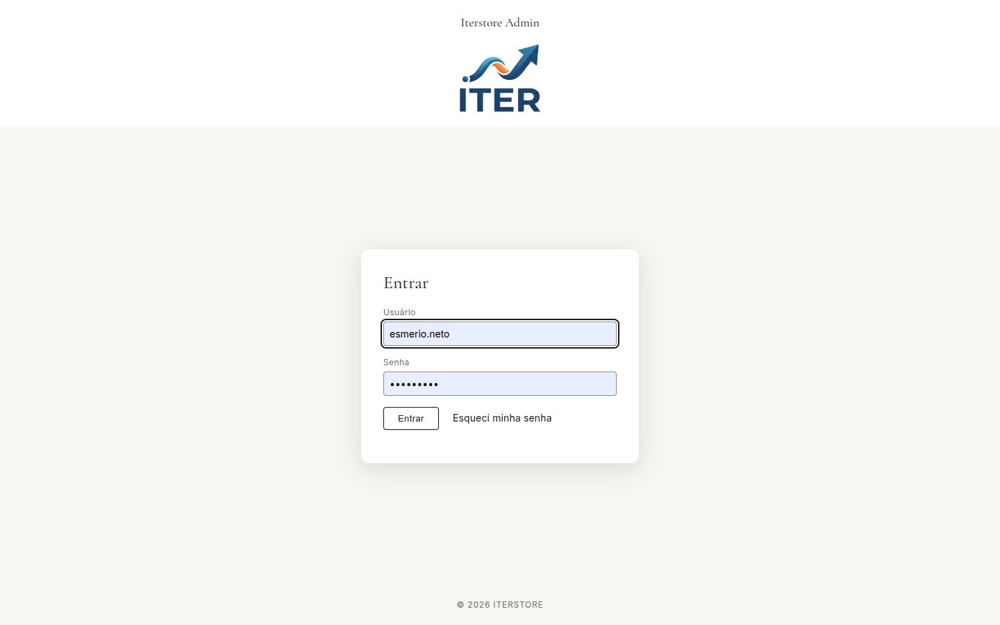
2.2 Esqueci minha senha
Na tela de login, clique em Esqueci minha senha e informe o seu e-mail. Você recebe um link para criar uma nova senha.
- A resposta é sempre a mesma, exista ou não o e-mail — assim ninguém descobre quem tem conta.
- O link vale por 2 horas (ajustável) e só pode ser usado uma vez.
- Redefinir a senha também desbloqueia um usuário bloqueado por tentativas erradas.
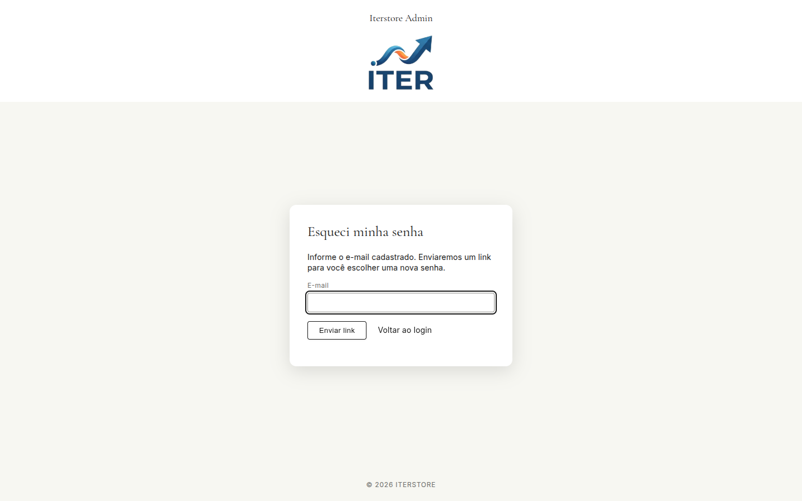
2.3 Alterar senha
Clique em Alterar senha no topo da tela. Informe a senha atual, a nova senha e a confirmação.
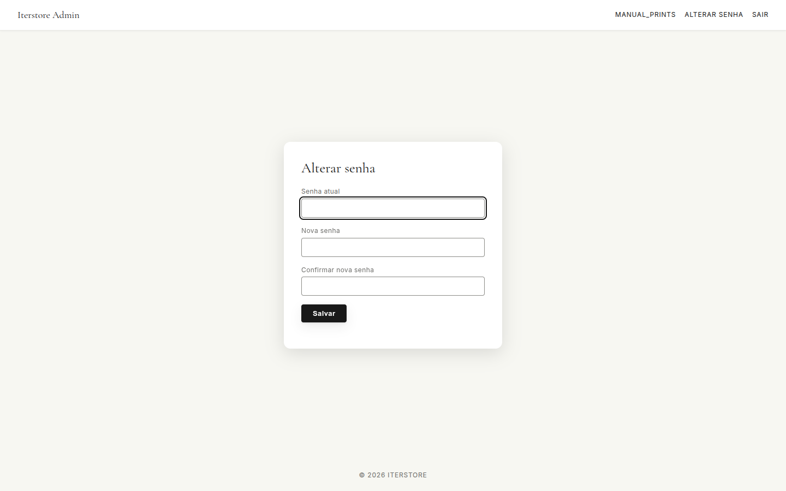
2.4 Regras de segurança
| Regra | Padrão | O que acontece |
|---|---|---|
| Tamanho mínimo da senha | 8 caracteres | Senhas menores são recusadas. |
| Letras e números | Exigido | A senha precisa ter os dois. |
| Senhas anteriores | 4 | Não é possível repetir nenhuma das 4 últimas senhas. |
| Expiração | 90 dias | Depois do prazo, o sistema pede uma nova senha antes de liberar o painel. |
| Tentativas de login | 5 | Depois de 5 senhas erradas seguidas, o usuário fica bloqueado. |
| Tempo de bloqueio | 15 minutos | Nesse período nem a senha correta é aceita. |
| Sessão sem uso | 8 horas | Passado o tempo sem uso, o painel volta para o login com o aviso "Sua sessão expirou". |
| Duração máxima da sessão | 12 horas | Mesmo em uso, a sessão termina 12 horas depois do login e pede para entrar de novo. Com 0, não há limite. |
Todos esses valores podem ser mudados em Lojas → Configurações → Segurança do admin.
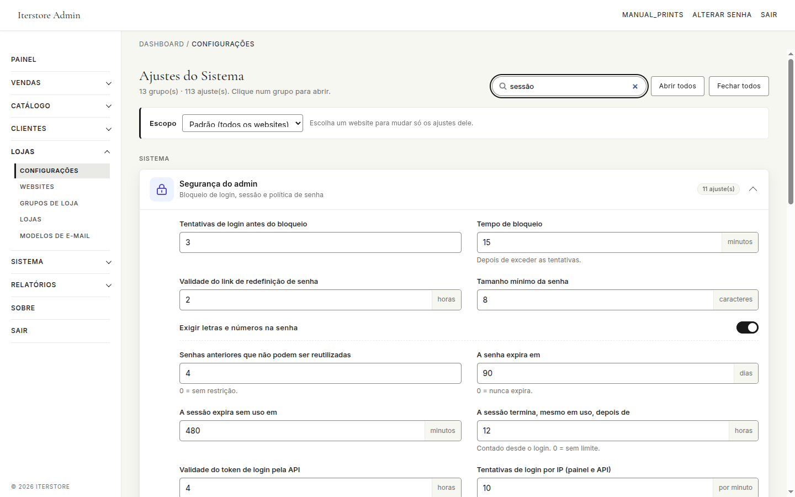
3. Conhecendo a tela
3.1 Menu lateral
O menu fica à esquerda e é organizado na ordem do dia a dia: primeiro o que se usa mais, por último a administração.
| Grupo | O que tem |
|---|---|
| Painel | Gráficos e indicadores de vendas. |
| Vendas | Pedidos, Novo pedido, Faixas de frete, Promoções, Conectar Melhor Envio. |
| Catálogo | Produtos, Categorias, Atributos, Mobile, Conjuntos de atributos, Estoque. |
| Clientes | Todos os clientes, Mensagens, Grupos, Provador virtual, Atributos e Conjuntos de cliente e de endereço. |
| Marketing | Sugestões, Histórico, Configurações. |
| Lojas | Configurações, Websites, Grupos de loja, Lojas, Modelos de e-mail. |
| Sistema | Usuários admin, Perfis, E-mails enviados, Log de operações, API (GraphiQL), Chaves da API. |
Clique no nome de um grupo para abri-lo; abrir outro fecha o anterior. O item da tela atual fica destacado. O item Mensagens mostra, em vermelho, quantas mensagens de clientes ainda não foram lidas, e o item Sugestões, quantos e-mails de marketing esperam aprovação.
3.2 Listas, filtros e páginas
Todas as listas do painel funcionam do mesmo jeito:
- Topo: o título e o botão da ação principal (ex.: + Novo produto).
- Barra de filtros: busca por texto e os filtros próprios da lista.
- Ordenação: clique no título de uma coluna para ordenar; clique de novo para inverter (▲ / ▼).
- Paginação: embaixo, à direita — "Ir para a página", "Mostrar linhas", a faixa exibida ("9–16 de 34") e as setas.
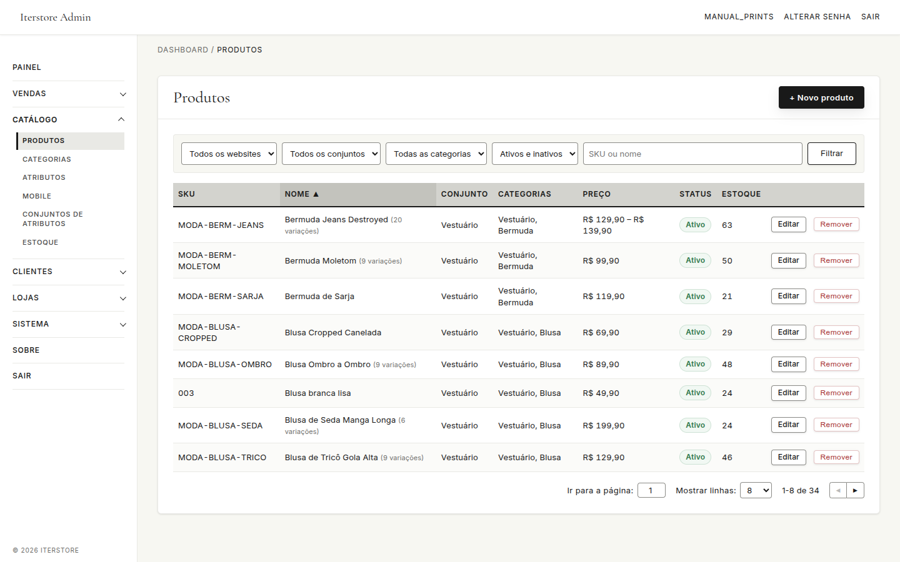
3.3 Mensagens e confirmações
- Avisos de sucesso aparecem no canto superior direito e somem em 4 segundos. Erros e avisos ficam até você fechar no "×".
- Ações que apagam ou cancelam algo pedem confirmação numa janela. O botão "Cancelar" vem selecionado, para evitar cliques acidentais.
- Se um formulário ficar aberto por muito tempo, ao salvar pode aparecer "sessão expirada": basta recarregar a página e tentar de novo.
4. Painel de vendas
Painel — a primeira tela do sistema mostra a saúde da loja numa tela só, sem rolagem.
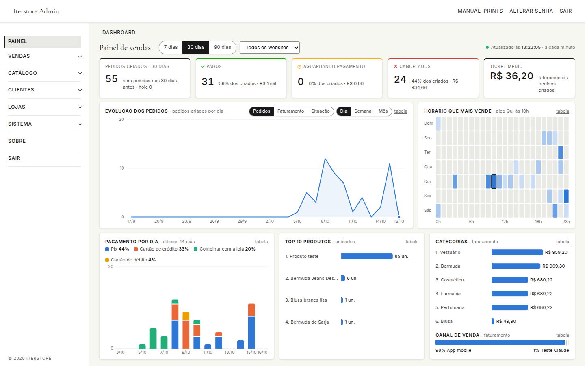
No topo
- Período: 7, 30 ou 90 dias.
- Website: uma loja ou todas.
Indicadores
- Pedidos criados, com a comparação (▲/▼) com o período anterior e os pedidos de hoje.
- Pagos, Aguardando pagamento e Cancelados, cada um com o % e o valor.
- Ticket médio (faturamento ÷ pedidos).
Gráficos
- Evolução dos pedidos por dia, semana ou mês, em pedidos, faturamento ou situação.
- Horário que mais vende: dia da semana × hora, com o pico destacado.
- Pagamento por dia nos últimos 14 dias, com o % de cada forma.
- Top 10 produtos, Categorias que mais faturam e Canal de venda (app, atendimento etc.).
5. Catálogo
5.1 Produtos
Catálogo → Produtos. A lista mostra SKU, nome, conjunto, categorias, preço, status e estoque disponível. Produtos com grade aparecem uma vez só, com "(N variações)" e a faixa de preço. Buscar o SKU de uma variação encontra o produto pai.
Vários produtos de uma vez
Marque os produtos na caixa à esquerda (a caixa do título marca todos da página). Aparece uma barra acima da lista com quantos estão marcados: escolha a Ação e clique em Aplicar. As ações de hoje são do Provador virtual (item 6.6): ligar, desligar e o tipo de peça. Num produto com grade, a ação vale para o produto inteiro. Até 500 produtos por vez; cada produto alterado fica no Log de operações. Só aparecem as ações que o seu perfil permite.
Cadastrar um produto
- Clique em + Novo produto.
- Escolha o conjunto de atributos (ex.: Vestuário) e o tipo: Simples ou Com grade. Clique em Trocar para carregar os campos do conjunto.
- Preencha SKU (código único), Nome e Preço.
- Marque os Websites onde o produto será vendido e ao menos uma Categoria de cada website.
- Preencha descrição, fotos e os demais campos e clique em Salvar.
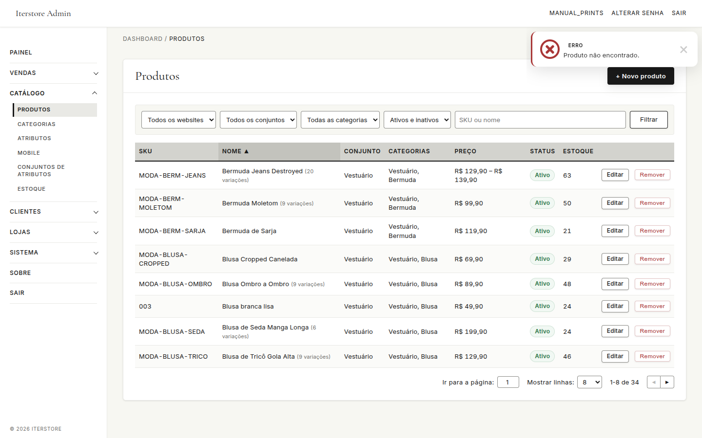
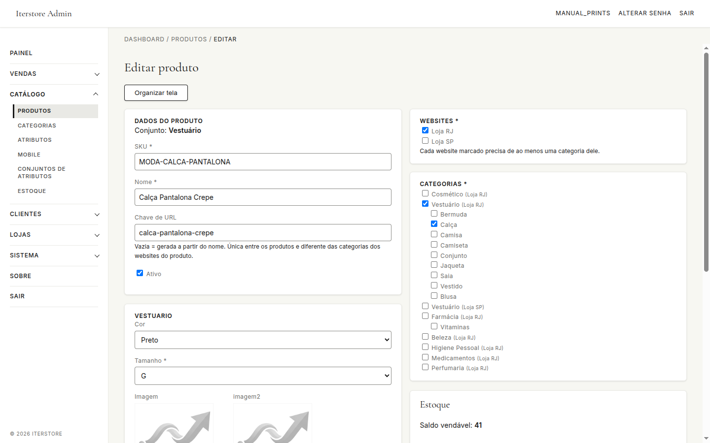
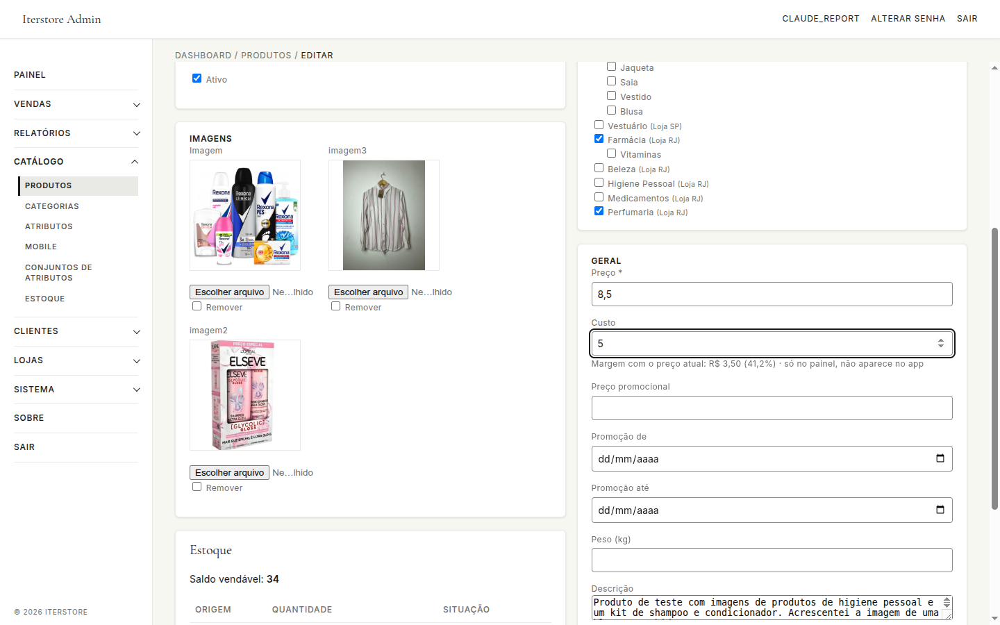
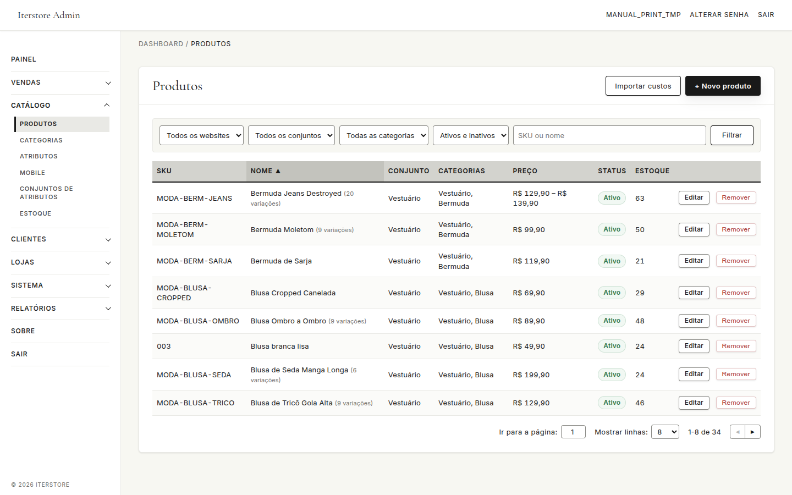
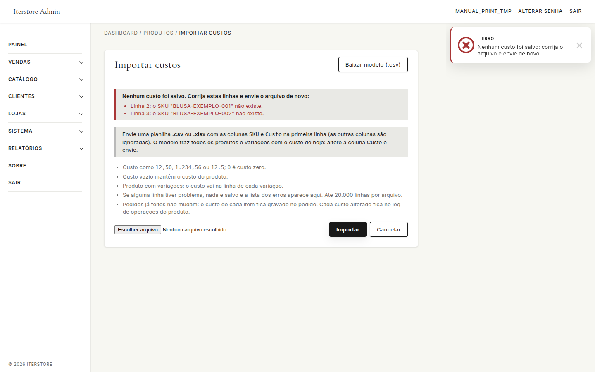
Regras importantes
- Chave de URL: deixe vazia e ela é criada a partir do nome ("Calça Jeans" → calca-jeans). É o endereço do produto na loja.
- Categorias: marcar uma subcategoria marca as categorias pai automaticamente.
- Imagens: WebP, AVIF, JPG, PNG ou JPEG XL. Imagens grandes são reduzidas sozinhas antes do envio. Clique na miniatura para ver em tamanho grande.
- Preço promocional: preencha "Preço promocional" e, se quiser, "Promoção de" / "Promoção até". Ele vale no app no lugar do preço normal enquanto estiver dentro do período e abaixo do preço.
- Custo: o quanto o produto custa para a loja. Logo abaixo aparece a margem com o preço atual (em vermelho se o custo passar do preço). O custo só aparece no painel, para perfis com a permissão "Ver e editar o custo", e nunca no app. Ele é usado na margem dos relatórios (item 8.4).
- Importar custos: para cadastrar o custo de muitos produtos de uma vez, use o botão Importar custos, no topo da lista de produtos. Clique em "Baixar modelo (.csv)": vem a lista de todos os produtos e variações com o custo de hoje. Abra no Excel, preencha a coluna Custo (por exemplo, 12,50), salve e envie o arquivo (.csv ou .xlsx). Custo em branco não muda nada. Se alguma linha estiver errada (um SKU que não existe, por exemplo), nada é salvo e a tela mostra o número da linha para você corrigir. Produto com variações: o custo vai na linha de cada variação.
- Se algum campo estiver errado, nada é salvo e a tela volta com o que você digitou, indicando o erro.
5.2 Produto com grade (variações)
Use para produtos vendidos em cor, tamanho, voltagem, sabor etc. Cada combinação é uma variação com SKU, preço, estoque e fotos próprios; nome, websites e categorias vêm do produto pai.
- Ao criar, escolha Tipo: Com grade e marque de 1 a 3 atributos (ex.: Cor e Tamanho).
- No bloco Grade, marque as opções desejadas (Azul, Preto, P, M…).
- Informe o Preço das novas variações e clique em Gerar variações. Só as combinações que faltam são criadas.
- Na tabela, ajuste SKU, preço e ativo de cada variação, ou clique em Editar para fotos e descrição.
- Na coluna Imagem do produto, escolha qual variação empresta as fotos para o produto pai na vitrine.
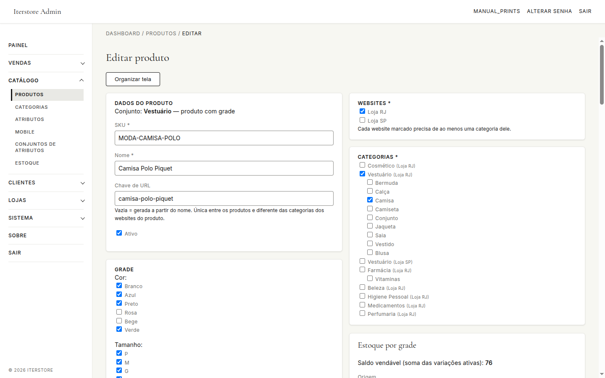
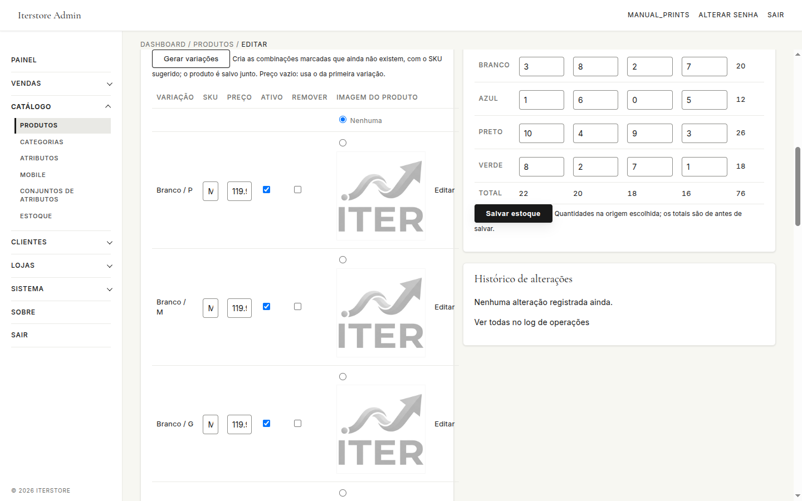
5.3 Estoque
O estoque é controlado por origem (depósito, CD, loja física). Cada origem pertence a um website.
- Catálogo → Estoque: cadastro das origens (código, nome, prioridade, endereço). A "Origem padrão" já vem criada.
- Produto simples: o painel Estoque no fim da edição tem uma linha por origem com a quantidade e a situação. Clique em Salvar estoque.
- Produto com grade: o painel Estoque por grade mostra uma tabela cor × tamanho com totais. Escolha a origem, digite as quantidades e clique em Salvar estoque.
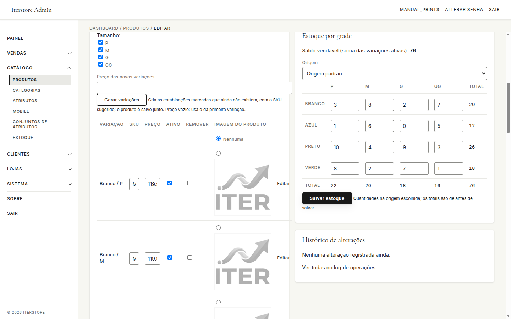
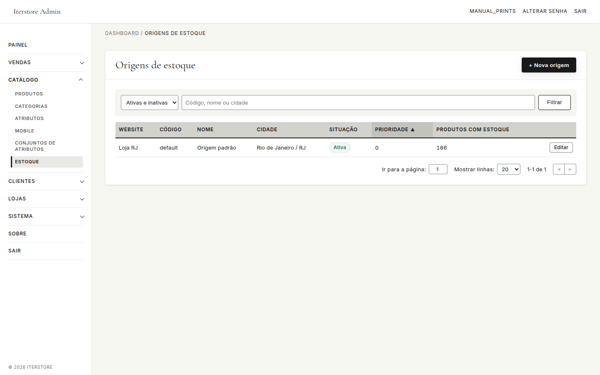
5.4 Organizar tela
Na edição de produto (e de cliente), o botão Organizar tela permite arrastar os blocos e campos, deixar um bloco com largura total (↔) e escolher o número de colunas. Clique em Salvar layout. O layout é de cada usuário e vale para todos os produtos; Restaurar padrão desfaz.
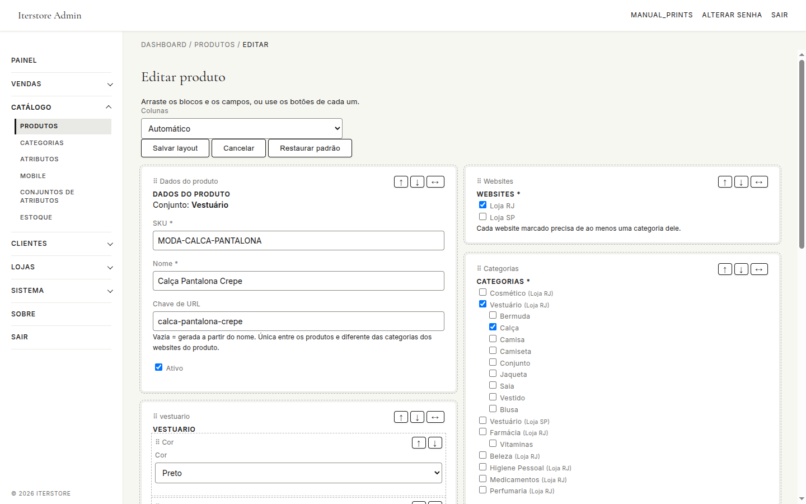
5.5 Categorias e banners
Catálogo → Categorias mostra a árvore de categorias de cada website, com o número de produtos. Use + Subcategoria para criar uma categoria dentro de outra.
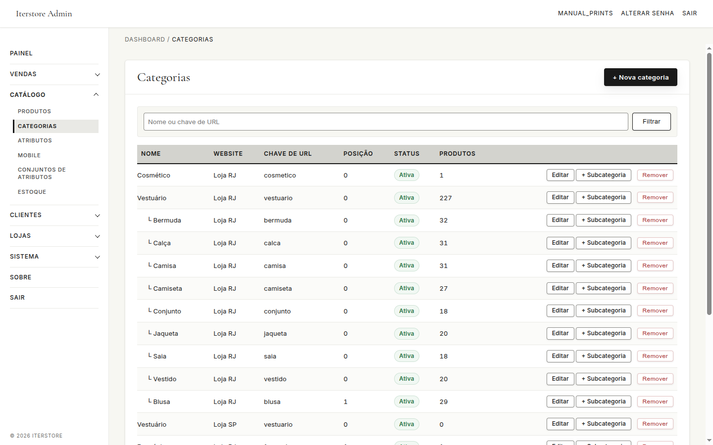
- Cada categoria tem nome, chave de URL, posição (ordem) e status.
- Não é possível remover uma categoria que tenha subcategorias ou produtos.
- Banners: no formulário da categoria, envie até 5 imagens (sugestão: 1200 × 400 px). Com uma imagem o app mostra um banner; com duas ou mais, um carrossel. Arraste pela alça ⠿ para mudar a ordem.
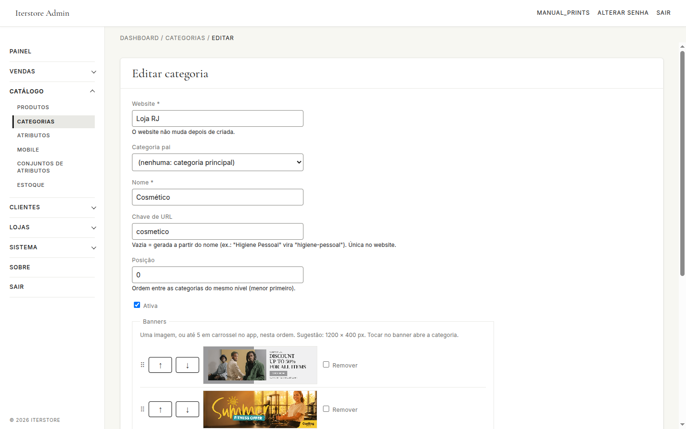
5.6 Atributos e conjuntos
Atributos são os campos extras de um cadastro (cor, tamanho, marca, voltagem…). Conjuntos dizem quais atributos aparecem juntos, em que grupo e em que ordem — por exemplo, "Vestuário" com cor, tamanho e tecido; "Eletrônicos" com marca e voltagem.
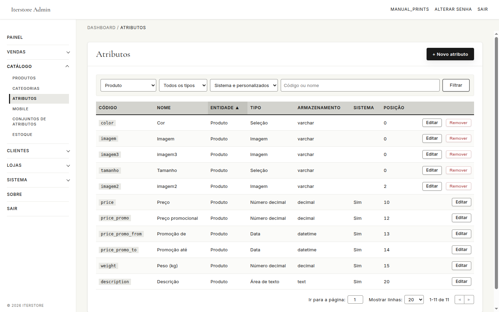
- Tipos de campo: Texto, Área de texto, Número, Seleção, Múltipla seleção, Sim/Não, Opções, Data, Imagem, Telefone, CEP, CPF/CNPJ e outros.
- Usar nos filtros da loja: faz o atributo aparecer como filtro no app (ex.: filtrar por cor).
- Usar na grade: permite usar o atributo para gerar variações.
- O sistema recusa nomes repetidos ou muito parecidos ("Cor" × "Cores") e avisa quando há um nome quase igual.
- Atributos do sistema (Preço, Descrição, Peso…) não podem ser removidos. Criar e remover atributos é exclusivo do perfil Administrador.
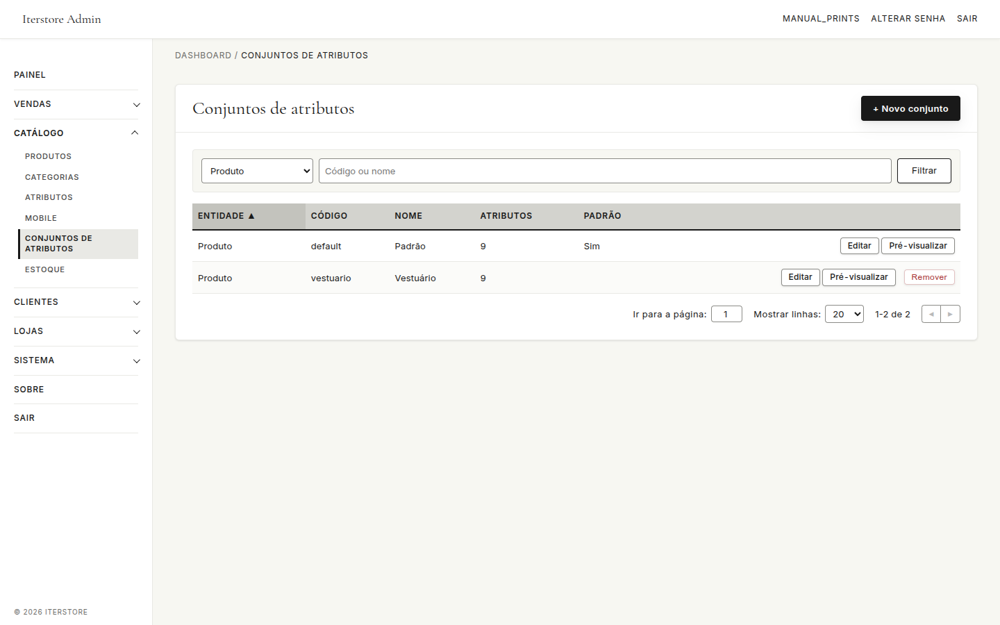
5.7 Vitrine do app (Mobile)
Catálogo → Mobile define a tela inicial do aplicativo: uma seção por categoria, com os primeiros produtos dela e um "mostrar mais".
- Escolha o website e ligue Usar esta ordem no app.
- Arraste as categorias (alça ⠿ ou ↑ ↓) para definir a ordem e ligue Mostrar no app nas desejadas.
- Em cada categoria, defina quantos produtos Exibir de início e, se quiser, escolha produtos em destaque com Adicionar.
- Ligue Mostrar banner para exibir os banners da categoria no topo da seção.
- Clique em Salvar.
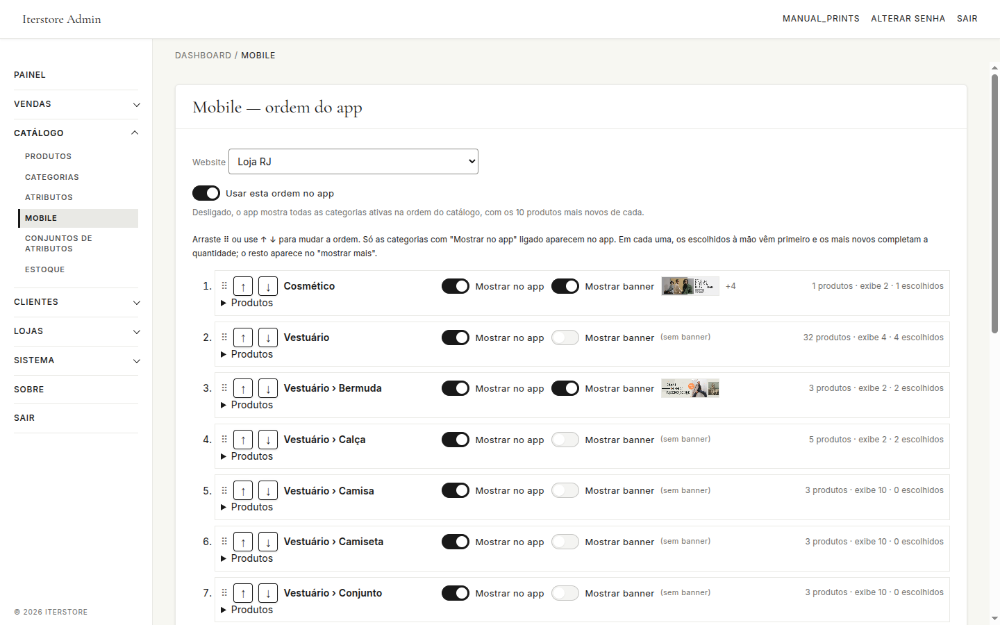
Com a chave desligada, o app mostra todas as categorias ativas, cada uma com os 10 produtos mais novos.
6. Clientes
Clientes → Todos os clientes. A busca aceita nome, razão social, e-mail ou CPF/CNPJ (com ou sem máscara). Filtros por tipo, grupo, website e situação.
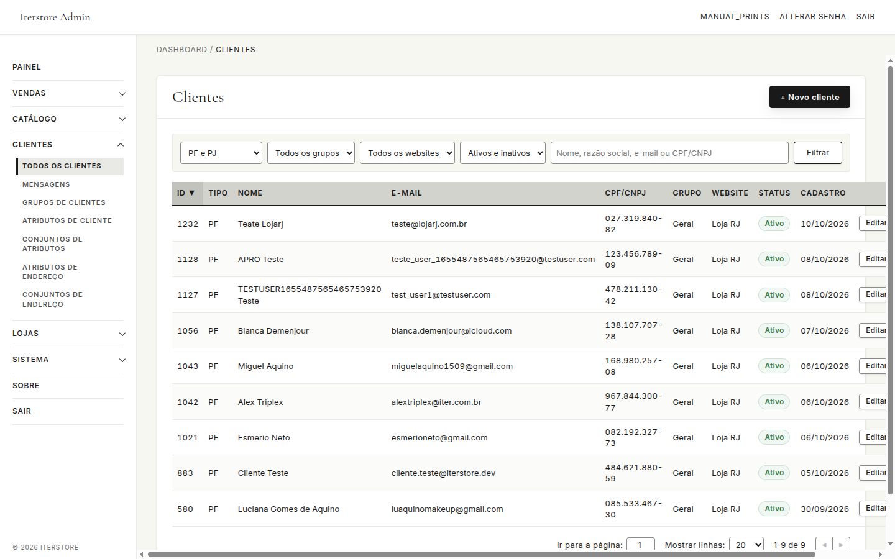
6.1 Cadastro PF e PJ
- Pessoa física: CPF (validado) e data de nascimento.
- Pessoa jurídica: CNPJ (validado), razão social, nome fantasia e inscrição estadual (ou "Isento"). Nome e sobrenome passam a ser os do contato.
- E-mail e CPF/CNPJ não se repetem dentro do mesmo website.
- Trocar o tipo mostra os campos certos sem recarregar a página.
- No fim da tela aparecem os últimos pedidos do cliente e o Histórico de alterações.
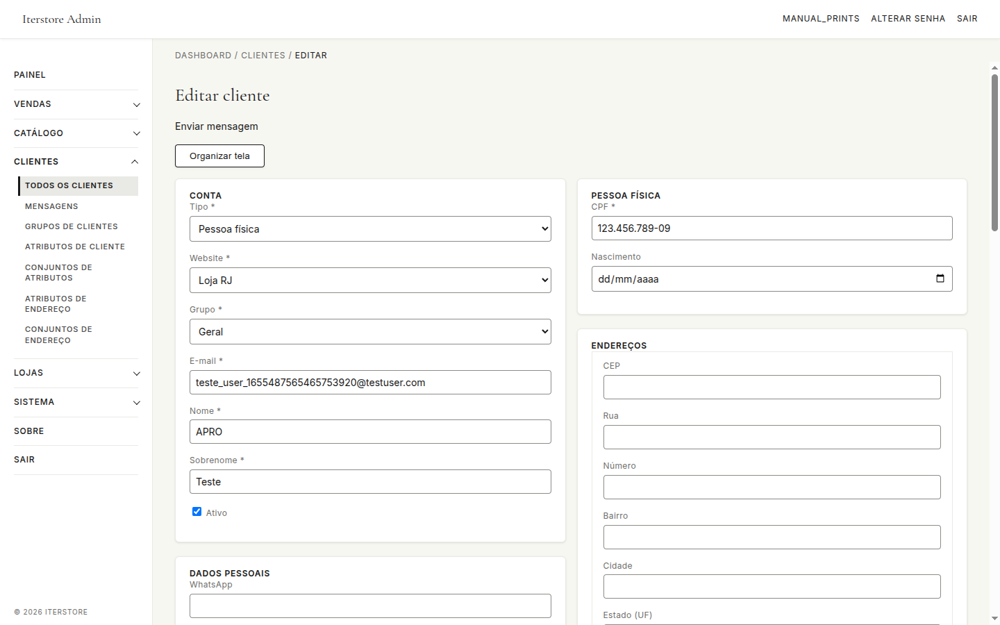
6.2 Endereços
- + Adicionar endereço abre um endereço em branco. Ao digitar o CEP, rua, bairro, cidade e UF são preenchidos automaticamente; confira e complete o número.
- Marque Padrão de entrega e Padrão de cobrança. Sem nenhum marcado, o primeiro endereço vira o padrão.
- Remover tira o endereço ao salvar. Tudo é gravado junto com o cliente, no botão Salvar.
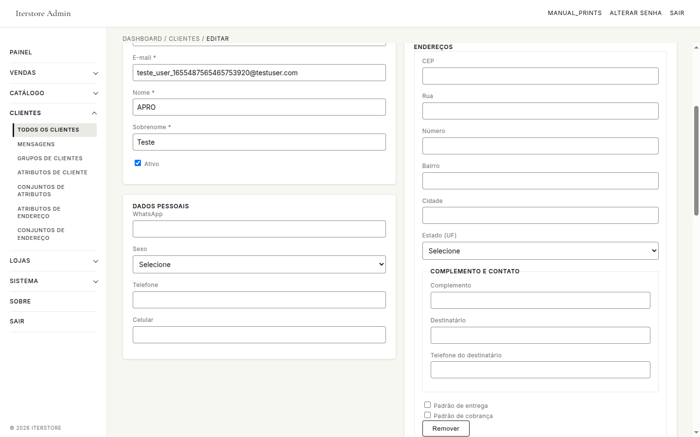
6.3 Grupos de clientes
Clientes → Grupos de clientes. Os grupos padrão são Geral, Atacado e VIP. O cliente novo entra no primeiro grupo. Um grupo com clientes não pode ser removido.
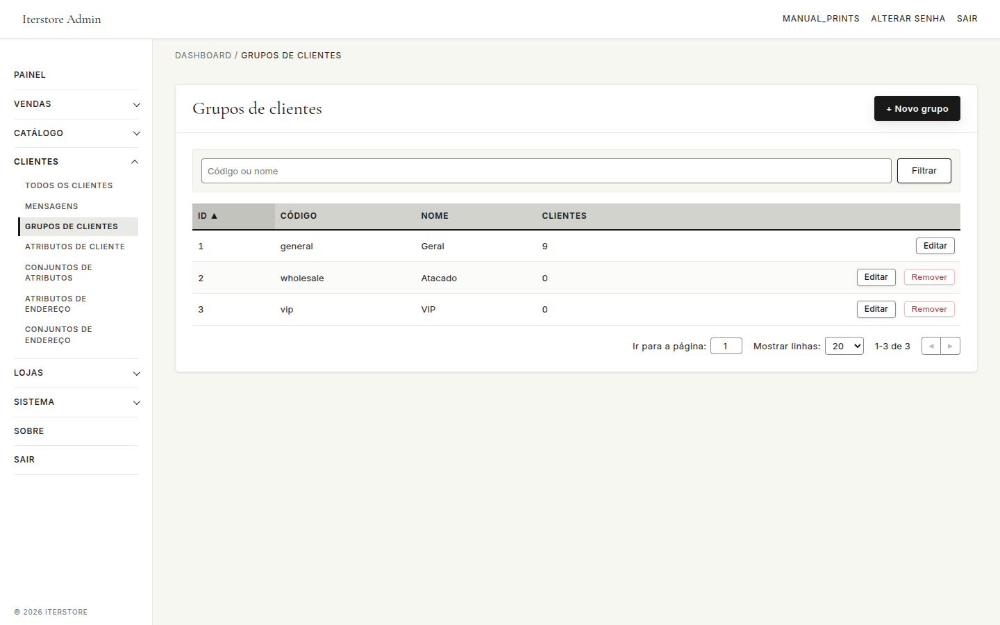
6.4 Mensagens com clientes
Clientes → Mensagens. Cada cliente tem uma conversa com a loja, pelo app.
- Caixa de entrada: um cliente por linha, com a última mensagem. As conversas com mensagens não lidas ficam em negrito, com o número em vermelho. Use "Só não lidas" para filtrar.
- + Nova conversa busca qualquer cliente e abre a conversa, mesmo vazia.
- Conversa: cliente à esquerda, loja à direita. Ao lado, os dados do cliente e os 3 últimos pedidos. As mensagens se atualizam sozinhas a cada 30 segundos.
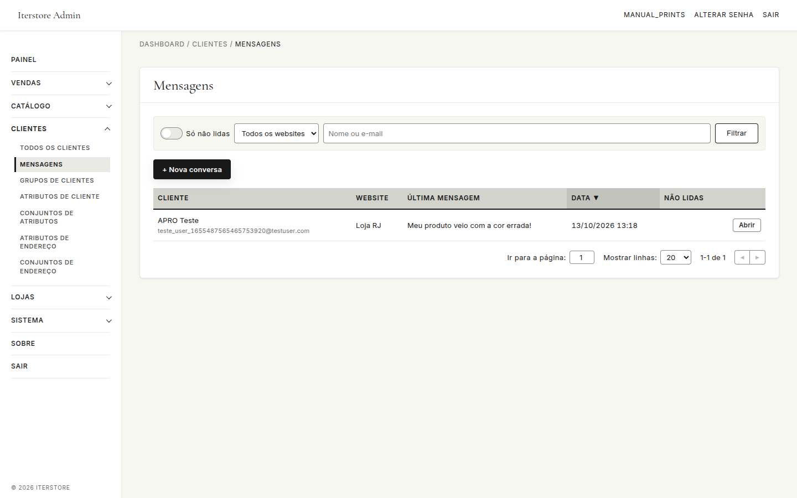
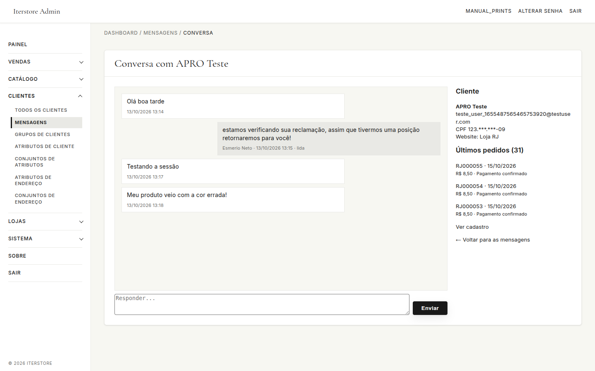
6.5 Marketing por e-mail
O sistema encontra clientes que merecem um lembrete e sugere um e-mail para cada um. Você escolhe, regra por regra, se o e-mail sai sozinho ou se espera a sua aprovação.
| Regra | Quem entra | O e-mail |
|---|---|---|
| Carrinho abandonado | Quem deixou produtos no carrinho e não fechou o pedido. Até dois lembretes (padrão: 3 h e 24 h depois). Visitantes entram se informaram o e-mail. | Lista os produtos e leva de volta ao carrinho. |
| Sem comprar há N dias | Quem não compra há mais de N dias (padrão 90). | Convida a voltar à loja. |
| Fora do ritmo habitual | Quem costuma comprar com regularidade (pelo menos 3 pedidos) e passou do seu intervalo médio mais uma tolerância (padrão 20%). Ex.: compra a cada 30 dias e está há 37 sem comprar. | Convida a voltar à loja. |
| Cadastrou e nunca comprou | Quem se cadastrou há N dias (padrão 7) e não fez nenhum pedido pago. | Boas-vindas e convite para a primeira compra. |
| Novidades para recorrentes | Quem fez pelo menos 3 pedidos nos últimos 180 dias. A cada 30 dias. | Os produtos novos com estoque; sem novos, os mais vendidos. |
Todas as regras vêm desligadas. Os e-mails podem ser editados em Lojas → Modelos de e-mail (os que começam com "Marketing").
Consentimento (LGPD)
- Só recebe quem marcou "Aceita receber ofertas por e-mail", no cadastro do cliente (tela do admin ou app). Os clientes que já existiam começam desmarcados.
- Todo e-mail de marketing leva o link "Não quero mais receber". O cliente confirma numa página da loja e a marcação sai do cadastro na hora. O Gmail e outros também mostram um botão de descadastro próprio, que faz o mesmo.
- O sistema guarda cada vez que o cliente marcou ou desmarcou, com a data, como prova do consentimento.
- Exceção, desligada por padrão: "Enviar carrinho abandonado mesmo sem consentimento". Ligada, o lembrete do carrinho vai também para quem nunca respondeu, mas nunca para quem pediu para sair.
Sugestões
Marketing → Sugestões lista os e-mails que esperam aprovação, com o cliente, a regra e o motivo (ex.: "Última compra: pedido RJ000120"). Filtre por regra, website ou nome/e-mail.
- Ver e-mail mostra exatamente como o e-mail sairia agora.
- Marque uma ou várias (a caixa do título marca todas) e clique em Enviar as marcadas ou Descartar as marcadas.
- Dentro do horário de envio, o e-mail entra na fila na hora; fora dele, sai no início do próximo horário.
- Sugestão não aprovada expira (padrão: 3 dias), para não chegar um lembrete velho.
Histórico
Marketing → Histórico mostra todas as sugestões, com filtros por situação, regra, website e período. As situações são: Aguardando aprovação, Aprovada (aguardando o horário), Enviada, Descartada, Expirada e Não enviada.
- Antes de enviar, o sistema confere tudo de novo. Se algo mudou, a sugestão fica Não enviada, com o motivo na linha. Por exemplo: o cliente tirou o consentimento, já recebeu outro e-mail de marketing há pouco, ou o motivo deixou de valer porque o carrinho virou pedido ou ele comprou de novo.
- No topo, um quadro por regra mostra quantos e-mails saíram e quantos clientes fizeram um pedido pago em até 7 dias depois do e-mail. É uma indicação: o cliente pode ter comprado por outro motivo.
Configurações
Marketing → Configurações (ou Lojas → Configurações → Marketing). Os ajustes valem por website.
- Geral: no máximo 1 e-mail de marketing por cliente a cada N dias (padrão 7, somando todas as regras), o horário de envio (padrão das 9 às 20 h), o prazo para a sugestão expirar e a exceção do carrinho.
- Uma área para cada regra: ligar ou desligar, Envio ("Automático" ou "Aguardar aprovação") e os prazos da regra.
- O mesmo motivo nunca gera dois e-mails: o cliente recebe uma vez o lembrete daquele carrinho ou daquela última compra.
6.6 Provador virtual
No app, o cliente tira uma foto e vê a si mesmo vestindo o produto. A imagem é gerada por um serviço de inteligência artificial (o provedor), pago por prova.
- Quem usa: só o cliente com "Pode usar o provador virtual" marcado no cadastro, e só nos produtos com "Provador virtual" marcado. Os dois vêm desmarcados. Para ligar em muitos produtos, use as ações em massa da lista de produtos (item 5.1). No produto, informe também o "Tipo de peça no provador" (parte de cima, parte de baixo ou peça inteira).
- Ligar e ajustar: Lojas → Configurações → Provador virtual: o provedor e a chave dele, o teto de gasto do mês, quantas provas cada cliente pode fazer por dia, por quanto tempo a imagem pronta fica disponível e os textos de dicas e de consentimento que o app mostra.
- Teto do mês: quando o gasto chega ao teto, o botão "Experimentar" some do app até o mês seguinte.
Clientes → Provador virtual lista todas as provas: data, cliente, produto, provedor, situação (Gerando, Pronta ou Erro, com o código do erro), tempo, custo e quantas vezes a prova foi reaproveitada. O mesmo cliente com a mesma foto e o mesmo produto recebe a prova pronta de novo, sem custo. Filtre por situação, provedor, website, período ou pelo nome do cliente, produto ou SKU.
- No topo: o gasto do mês contra o teto, as provas de hoje, a porcentagem de erros nos últimos 7 dias e o provedor ativo.
- Aviso em vermelho: aparece quando a última prova foi recusada porque a chave do provedor foi recusada ou o saldo acabou. Enquanto isso, os clientes veem "O provador não está disponível agora". Confira a chave e o saldo do provedor.
- Ver imagem: abre a imagem pronta enquanto ela estiver disponível. É a foto de um cliente: cada abertura fica no Log de operações, no cadastro do cliente.
7. Vendas
7.1 Pedidos
Vendas → Pedidos. Filtros por situação, website, canal de venda, forma de pagamento, período, motivo de cancelamento e busca por número, e-mail ou nome. O topo mostra quantos pedidos e o total do filtro (sem os cancelados).
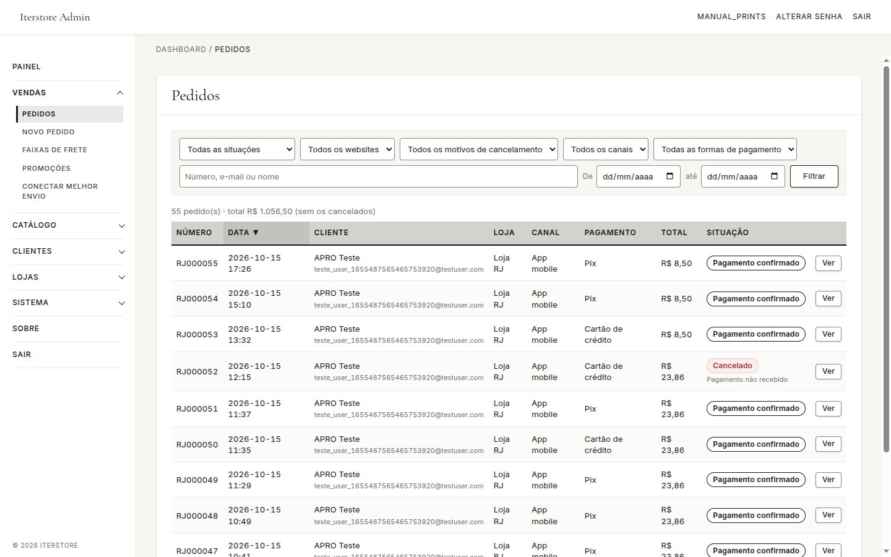
Situações do pedido
| Situação | Significado | Próximo passo |
|---|---|---|
| Aguardando pagamento | Todo pedido nasce assim. | Confirmar pagamento (ou automático pelo Mercado Pago). |
| Pagamento confirmado | Pago, pronto para separar. | Registrar entrega. |
| Enviado | Saiu da loja; o cliente recebeu o rastreio. | Concluir quando o cliente receber. |
| Concluído | Entregue. | — |
| Cancelado | Cancelado antes do envio; o estoque voltou. | — |
7.2 Atendimento do pedido
A tela do pedido mostra loja, canal, cliente, frete, pagamento (com a bandeira do cartão ou o logo do Pix), endereços, itens e histórico. Só aparecem as ações permitidas para a situação e o seu perfil:
- Confirmar pagamento — com comentário opcional (ex.: "comprovante recebido pelo WhatsApp").
- Registrar entrega — escolha a origem do estoque (o sistema sugere a melhor), a transportadora e o código de rastreio. O cliente recebe o rastreio por e-mail.
- Concluir — quando o cliente recebeu.
- Cancelar — veja o item 7.3.
- Comentar — em qualquer situação; marque "Avisar o cliente por e-mail" se ele deve receber.
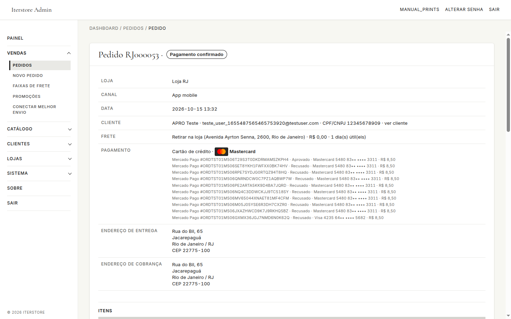
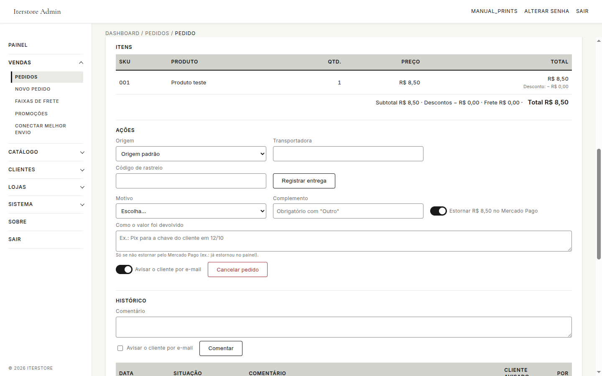
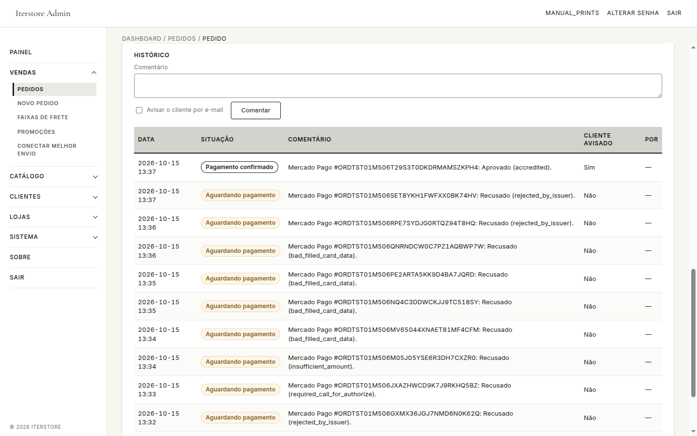
7.3 Cancelamento
Em Cancelar pedido, informe:
- Motivo: Desistência do cliente, Pagamento não recebido, Produto sem estoque, Suspeita de fraude, Erro no pedido ou Outro.
- Complemento: opcional (obrigatório com "Outro").
- Como o valor foi devolvido: obrigatório se o pedido já foi pago fora do Mercado Pago.
- Estornar no Mercado Pago: nos pedidos pagos pelo Mercado Pago, já vem ligado e devolve o valor na mesma forma de pagamento.
- Avisar o cliente por e-mail: ligado por padrão.
O que estava reservado volta para o estoque, e o motivo aparece na lista e na tela do pedido.
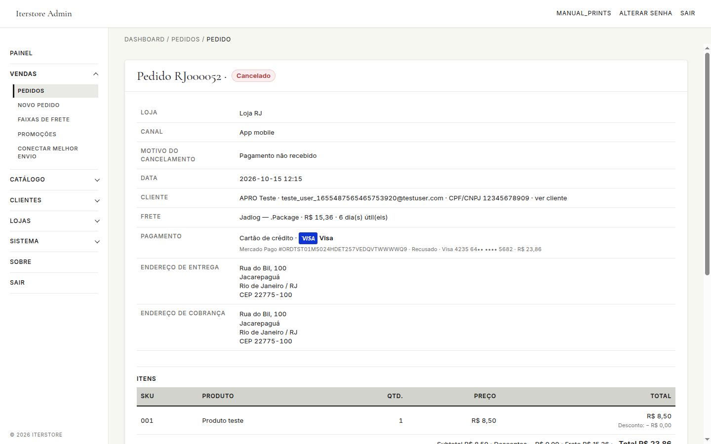
7.4 Novo pedido (atendimento)
Vendas → Novo pedido: para vender por telefone, WhatsApp ou balcão. O pedido sai igual ao do app.
- Busque o cliente (nome, e-mail ou CPF/CNPJ) e clique em Iniciar pedido, ou use Iniciar pedido para visitante.
- Adicione os itens por SKU ou nome; produtos com grade mostram cada variação com preço e saldo.
- Escolha o endereço, o frete e a forma de pagamento.
- Clique em Criar pedido. Marque Pagamento recebido se o cliente já pagou (balcão) e escreva um comentário interno, se quiser.
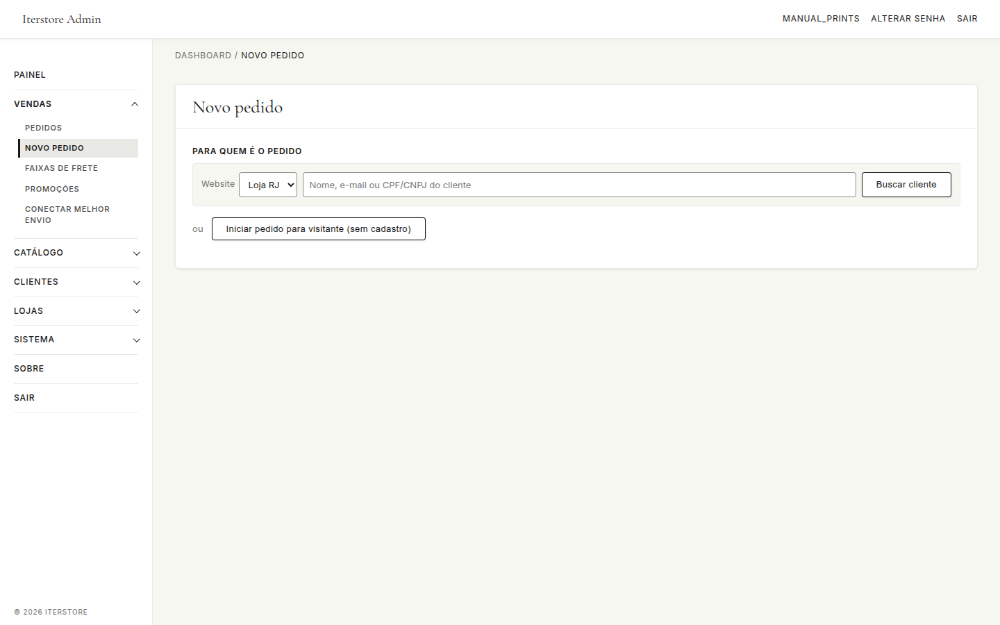
Pedidos começados e não fechados ficam listados com Continuar e Descartar.
7.5 Promoções e cupons
Vendas → Promoções.
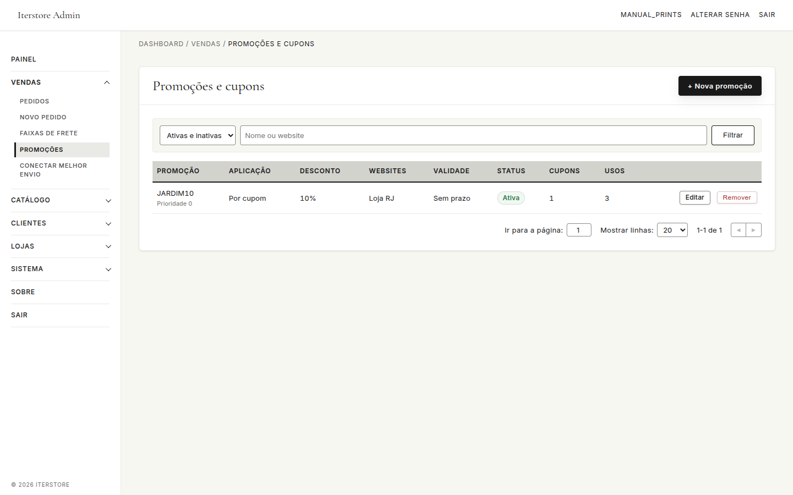
- Aplicação: automática (vale para todos) ou por cupom.
- Desconto: percentual ou valor fixo.
- Onde vale: websites, produtos, categorias, conjuntos de atributos e faixa de subtotal (mínimo/máximo).
- Validade: data e hora de início e fim (horário de Brasília).
- Prioridade e acúmulo: define a ordem e se pode somar com outras promoções; escolha também se vale para produtos que já estão com preço promocional.
- Cupons: um código por linha (letras, números, hífen e sublinhado). Limite de uso: ilimitado, uso único ou uma vez por cliente.
- O número de usos na lista abre o histórico: pedido, cliente, cupom, valor e situação. Ao cancelar o pedido, o uso do cupom é liberado.
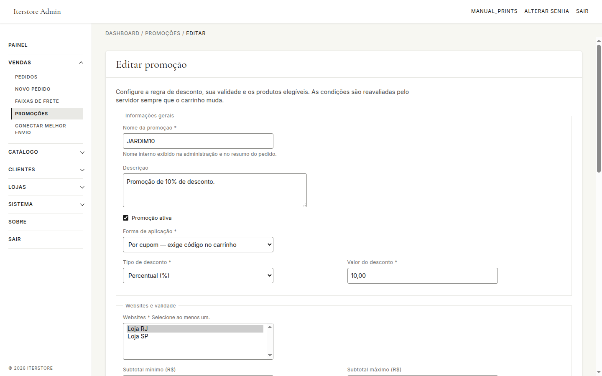
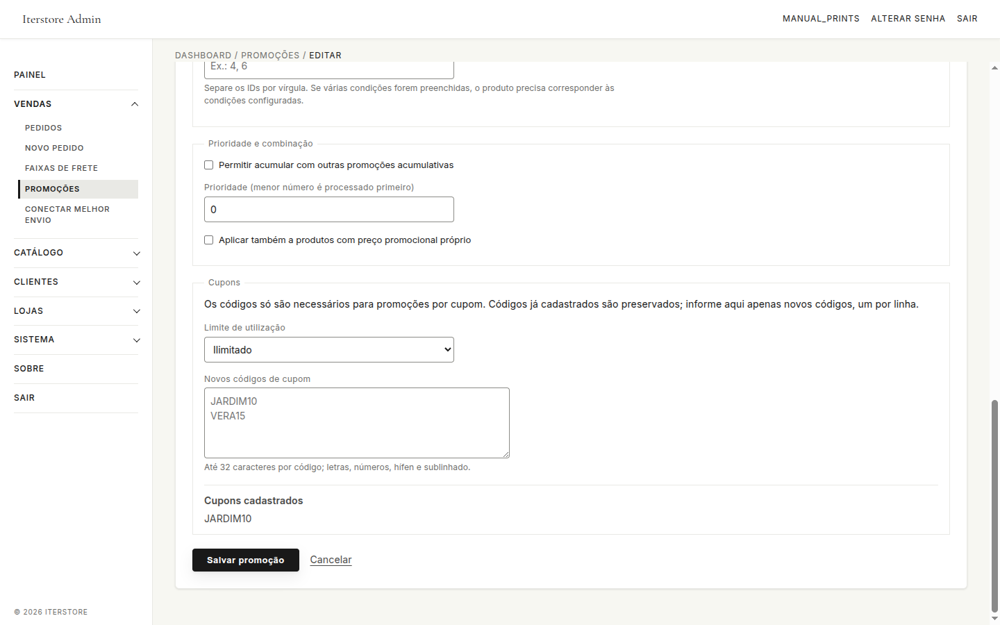
7.6 Frete
As formas de entrega são ligadas em Lojas → Configurações → Frete, por website:
- Frete por tabela: valor e prazo pelas faixas de CEP e peso, em Vendas → Faixas de frete.
- Frete grátis a partir de um valor de compra.
- Retirar na loja, sem custo, no endereço da loja.
- Correios (PAC, SEDEX…) e Melhor Envio, com cotação automática de preço e prazo. O Melhor Envio é conectado em Vendas → Conectar Melhor Envio.
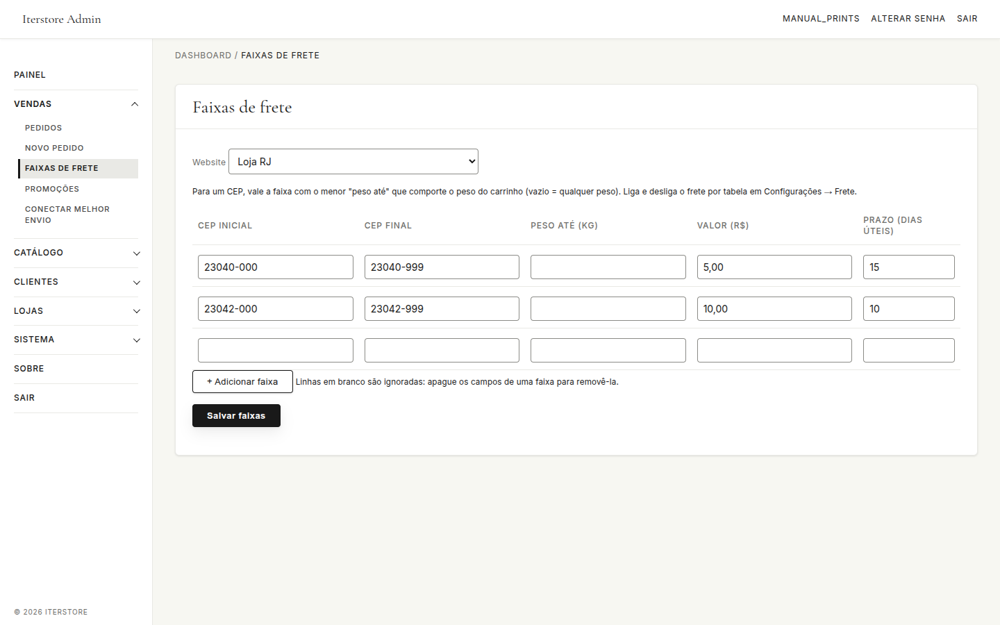
7.7 Pagamentos e Mercado Pago
- Pix manual: mostra a chave Pix da loja; o pagamento é confirmado por você no pedido.
- Combinar com a loja: dinheiro, cartão na retirada, depósito.
- Mercado Pago: Pix, cartão de crédito (até 12x) e débito, pagos dentro do app. O pedido muda sozinho para Pagamento confirmado quando o pagamento é aprovado, e a tela do pedido mostra, em "Tentativas de cobrança", cada tentativa com a data, a situação, o motivo de uma recusa (ex.: "Saldo ou limite insuficiente", "Recusado pelo banco"), a bandeira, o cartão mascarado e o valor. Ajuda a explicar ao cliente por que o cartão não passou.
- Nome na fatura do cartão (Configurações → Pagamento, bloco Mercado Pago): o nome que aparece na fatura do cliente, até 13 caracteres (ex.: JARDIMVERA). Um nome que o cliente reconhece evita contestações. Vazio = o nome da conta do Mercado Pago. O Mercado Pago considera este campo obrigatório na medição de qualidade: preencha antes de vender.
- Categoria dos produtos (mesmo bloco): o ramo da loja (ex.: Moda e vestuário), enviado em cada cobrança. Ajuda o Mercado Pago a aprovar mais pagamentos.
- Cartão de débito: aceita cartões de débito e pré-pagos (ex.: Elo pré-pago), sempre à vista.
- Cada cobrança leva ao Mercado Pago os itens do pedido, o frete e os dados do comprador (nome, CPF, telefone e endereço). Com isso, o Mercado Pago recusa menos pagamentos legítimos.
- Trocar uma credencial: para substituir o Access Token ou a assinatura do webhook, basta digitar o novo valor e salvar. A caixa "Apagar a senha salva" só apaga quando o campo fica vazio; com um valor novo digitado, vale o novo.
As credenciais do Mercado Pago (Access Token, Public Key e assinatura do webhook) e os prazos de cada forma ficam em Lojas → Configurações → Pagamento.
8. Relatórios
Relatórios: os números da loja num período, com filtros, totais e exportação. "Todos os relatórios" mostra um cartão por assunto; "Vendas", "Operação", "Estoque e catálogo", "Clientes" e "Financeiro" abrem só os do assunto. Quem vê os relatórios é definido no perfil, com quatro permissões: "Relatórios de vendas e operação", "Relatórios de estoque e catálogo", "Relatórios de clientes" e "Relatórios financeiros".
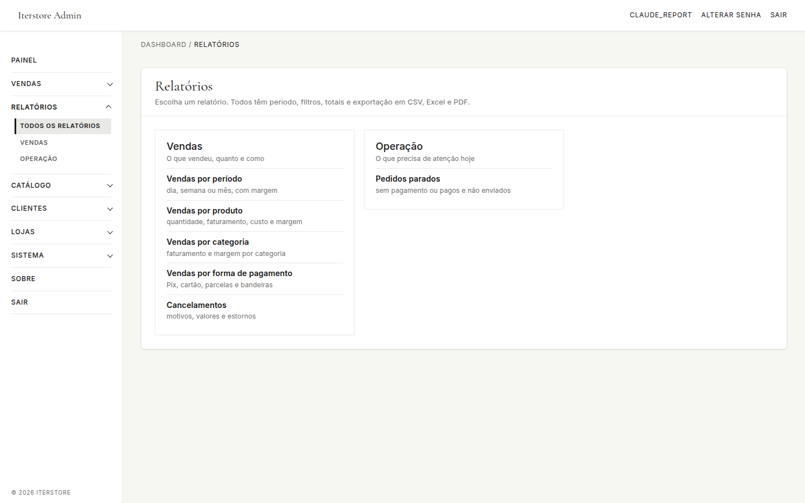
8.1 Os relatórios
São 26 relatórios em cinco assuntos, os mesmos do menu Relatórios.
Vendas
Permissão "Relatórios de vendas e operação". O que vendeu, quanto e como.
| Relatório | O que mostra |
|---|---|
| Vendas por período | Por dia, semana ou mês (pela data do pedido ou do pagamento): pedidos, itens, subtotal, descontos, frete, total, margem, ticket médio, aguardando e cancelados. Gráfico do faturamento e da margem. |
| Vendas por produto | Quantidade, pedidos, faturamento, desconto, custo, margem, preço médio e % do total. Filtros por categoria e busca; "Somar variações no produto pai" junta as cores e tamanhos no produto. |
| Vendas por categoria | Faturamento e margem de cada categoria. |
| Vendas por forma de pagamento | Pix, cartão (parcelas e bandeiras) e as outras formas. |
| Vendas por canal e atendente | Por canal (App, Atendimento…) e, nos pedidos feitos no painel, por quem fez o pedido. |
| Vendas por região | Por estado (UF) ou cidade de entrega: pedidos, clientes, valor, frete cobrado e frete médio. |
| Promoções e cupons | Quantas vezes cada promoção e cupom foi usado, quanto de desconto deu e o ticket médio dos pedidos com e sem desconto. |
| Frete | Por forma de entrega: frete cobrado, frete médio, frete grátis, retirada na loja e prazo prometido. |
| Cancelamentos | Por motivo: quantos, o valor, quantos já estavam pagos e o estornado no Mercado Pago. Clique no motivo para ver os pedidos. |
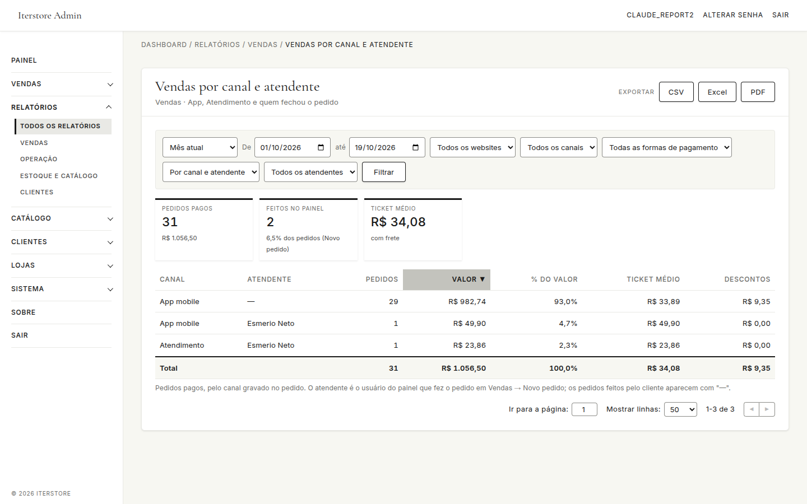
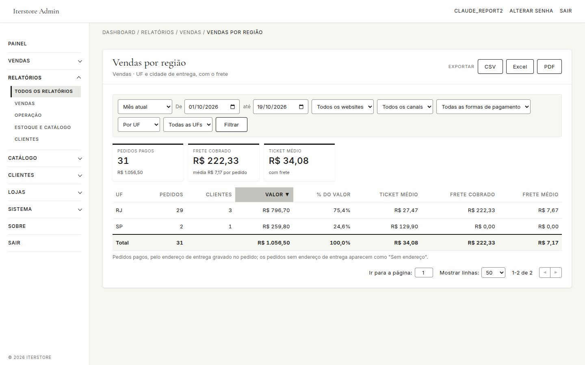
Operação
Mesma permissão de vendas. O que precisa de atenção hoje.
| Relatório | O que mostra |
|---|---|
| Pedidos parados | Aguardando pagamento há mais de 24 horas e pagos sem envio há mais de 2 dias (você muda os dois prazos). Clique no número para abrir o pedido. |
| Tempo de atendimento | Quanto tempo leva, em média e no pior caso, do pedido ao pagamento, do pagamento ao envio e do envio à conclusão, por semana ou mês. |
| Envios | Envios por transportadora e origem, os que estão sem código de rastreio, ou a lista de cada envio com o pedido. |
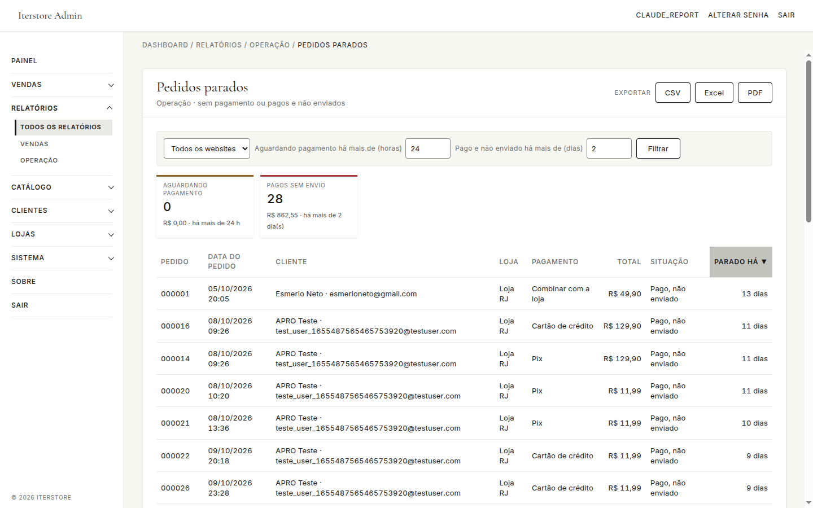
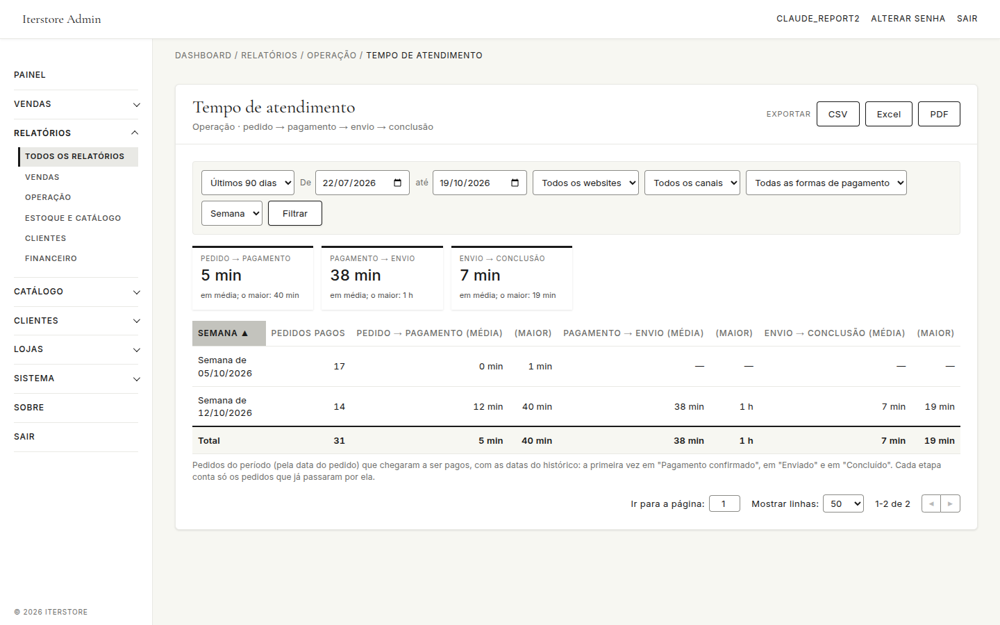
Estoque e catálogo
Permissão "Relatórios de estoque e catálogo". O que tem, o que falta e o que corrigir no cadastro.
| Relatório | O que mostra |
|---|---|
| Posição de estoque | Cada produto (ou variação) com o estoque de cada origem, o físico, o reservado em pedidos ainda não enviados, o vendável (o mesmo número da loja) e o valor em estoque pelo custo e pelo preço. Mostra a situação de agora. |
| Estoque baixo e esgotado | Os produtos ativos com até 3 unidades vendáveis (você muda o número), quanto venderam nos últimos 30 dias e mais ou menos quantos dias o estoque dura. "Venda perdida por dia" estima quanto os esgotados deixam de vender. |
| Produtos sem venda | Os produtos com estoque que não venderam nada no período (padrão: últimos 90 dias), com o valor parado e há quantos dias não vendem. |
| Movimentação de estoque | Cada entrada e saída no período: reserva de pedido, devolução de cancelamento, baixa no envio e ajuste manual (com a origem e quem fez). Clique no pedido para abri-lo. |
| Curva ABC | Os produtos que fazem o faturamento: A são os que somam os primeiros 80%, B os próximos 15% e C os 5% finais. Bom para decidir o que nunca pode faltar. |
| Qualidade do cadastro | O que corrigir: produtos ativos sem imagem, descrição, peso (o frete sai errado), preço ou custo, e produtos inativos com estoque. Clique no SKU para abrir o produto. |
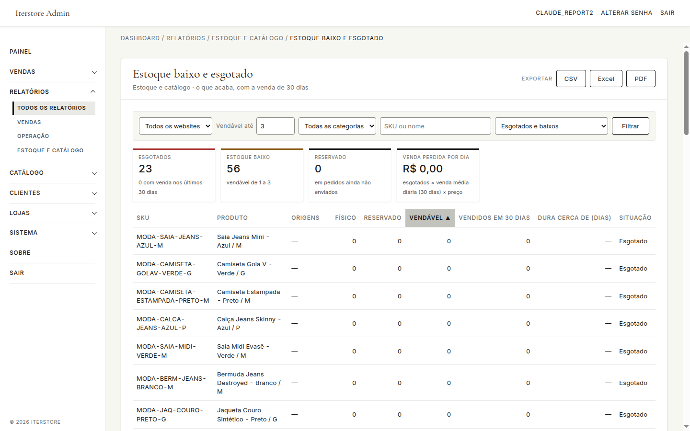
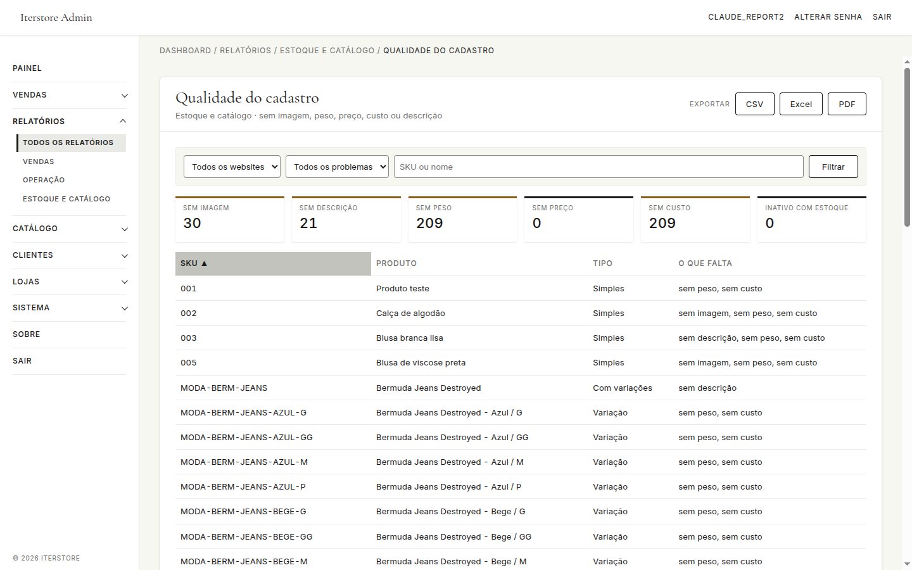
Clientes
Permissão "Relatórios de clientes". Quem compra, quem chegou e quem volta.
| Relatório | O que mostra | |
|---|---|---|
| Novos clientes | Cadastros por dia, semana ou mês, pessoa física e jurídica, e quantos deles já compraram. | |
| Melhores clientes | Quem mais comprou no período, com e-mail, telefone, pedidos, total gasto, primeira e última compra. Quem compra sem cadastro aparece como "Visitante", pelo e-mail. | |
| Clientes sem comprar | Os clientes cadastrados que não compram há mais de 90 dias (você muda o número), com e-mail, telefone, quanto já gastaram e a última compra. Bom para uma campanha de "volte a comprar". Pode incluir também quem se cadastrou e nunca comprou. | |
| Backup | A cada minuto (copia no intervalo escolhido) | Faz as cópias de segurança, apaga as velhas uma vez por dia e testa uma restauração por mês (item 10.6). |
| Carrinhos abandonados | Carrinhos com produtos que não viraram pedido e estão parados há mais de 24 horas (você muda o número), com os itens e o valor pelo preço de hoje. O visitante só tem e-mail se chegou a informá-lo na finalização da compra. | |
| Compras de visitantes | Quem comprou sem criar conta, com e-mail, CPF/CNPJ e telefone, para convidar a se cadastrar. Quem depois criou uma conta com o mesmo e-mail ou CPF/CNPJ sai da lista. |
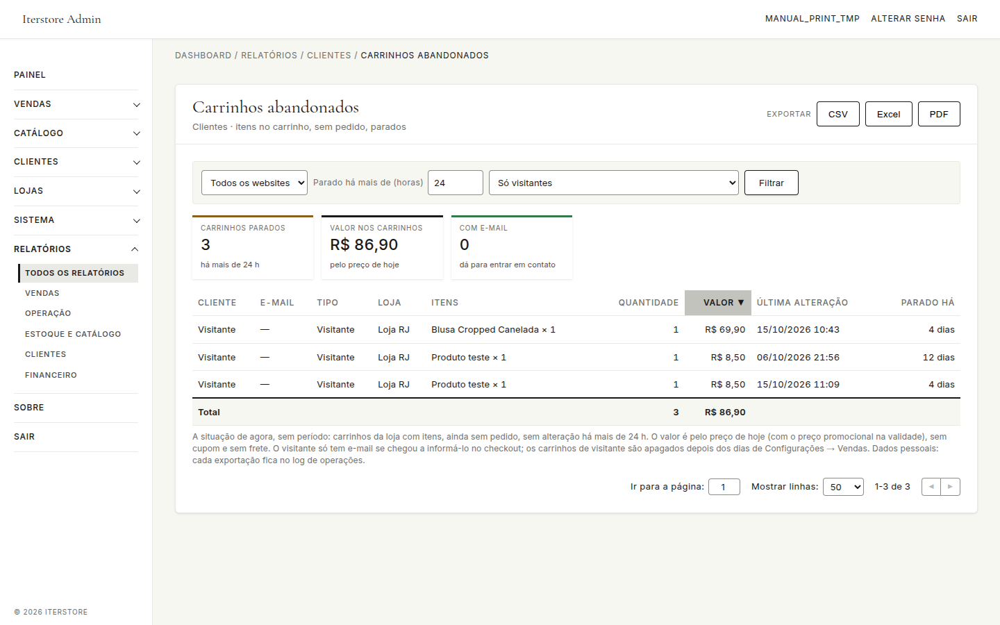
Financeiro
Permissão "Relatórios financeiros". O que entrou, o Mercado Pago e a margem.
| Relatório | O que mostra |
|---|---|
| Recebimentos | O que entrou pela data do pagamento, por forma de pagamento: bruto, o que foi devolvido em cancelamentos e o líquido. |
| Conciliação Mercado Pago | Cada tentativa de cobrança: aprovadas, recusadas e o motivo (saldo insuficiente, recusado pelo banco…), estornos e as cobranças a estornar (aprovadas em pedido cancelado). |
| Margem | Faturamento menos custo, por produto ou por categoria. Só para quem também vê o custo. |
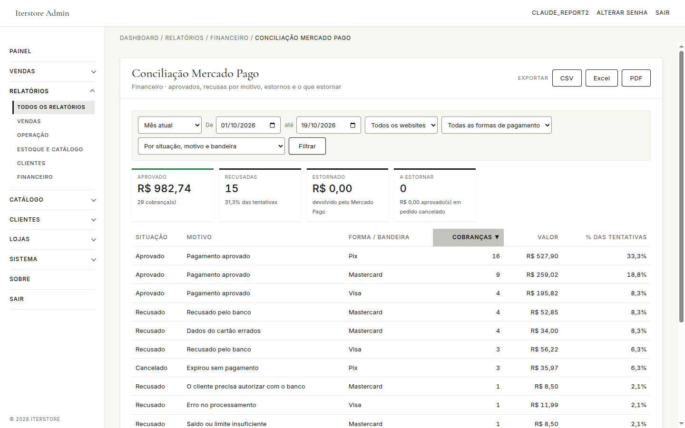
8.2 Usando um relatório
- Escolha o período (Mês atual, Hoje, Últimos 7, 30 ou 90 dias, Mês anterior, Este ano) ou digite as datas. O período vai até 366 dias.
- Se quiser, filtre por website, canal de venda, forma de pagamento e os filtros do relatório, e clique em Filtrar.
- Os indicadores no topo resumem o período. Clique no título de uma coluna para ordenar; a última linha da tabela é o total.
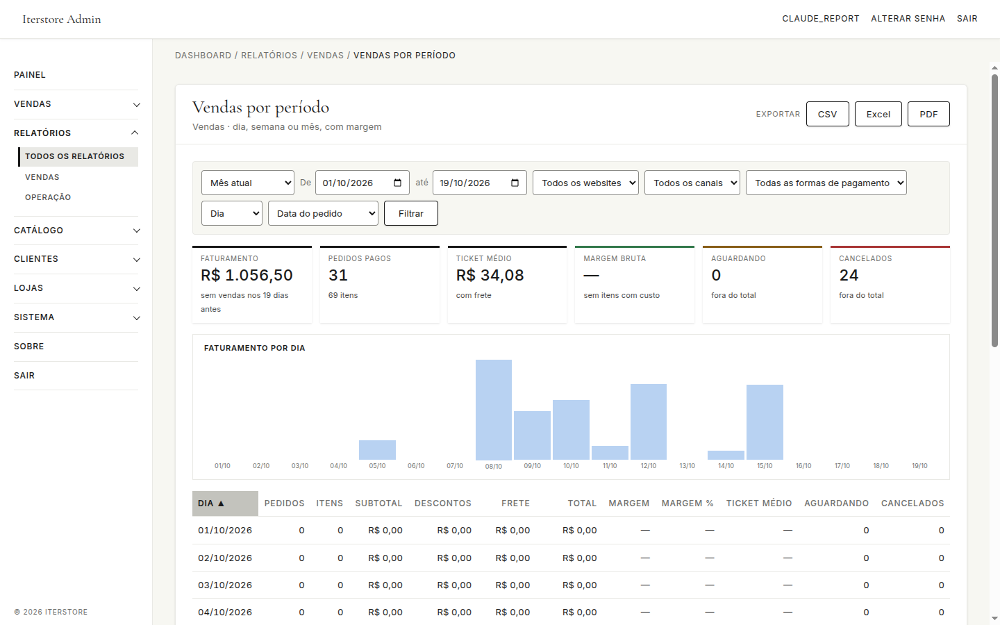
8.3 Exportar
Os botões CSV, Excel e PDF baixam o relatório com os mesmos filtros e a mesma ordem da tela, com todas as linhas.
- CSV: planilha simples, abre direto no Excel.
- Excel: valores como número (moeda e %), cabeçalho fixo, filtro em cada coluna e total com fórmula. Bom para fazer as suas contas.
- PDF: para imprimir ou mandar: logo da loja, indicadores, tabela e total, em folha A4 deitada. Até 2.000 linhas; acima disso, use o Excel.
8.4 Custo e margem
A margem dos relatórios usa o custo cadastrado no produto (item 5.1), copiado para o pedido no momento da compra: mudar o custo depois não muda os pedidos antigos. Margem = valor dos itens já com os descontos − custo; o frete fica fora.
- Itens sem custo ficam fora da margem, e o relatório diz quanto do faturamento ficou sem custo. Pedidos feitos antes do campo Custo existir ficam sem margem.
- O custo e a margem só aparecem para perfis com a permissão "Ver e editar o custo". Sem ela, as colunas somem da tela e das exportações.
- Para cadastrar o custo de muitos produtos de uma vez, use Importar custos na lista de produtos (item 5.1). O relatório Qualidade do cadastro mostra os produtos ativos ainda sem custo.
8.5 Envio automático por e-mail
Configurações → Ajustes do sistema → Relatórios: ligue "Enviar os relatórios por e-mail" (vem desligado) e escolha:
- Frequência: semanal (toda segunda-feira, com a semana anterior) ou mensal (todo dia 1º, com o mês anterior).
- Relatórios: Vendas por período e por produto, ou todos os de vendas e operação (estoque, clientes e financeiro não vão por e-mail).
- Formato dos anexos (Excel, PDF ou CSV) e os destinatários, um e-mail por linha.
9. Lojas e Configurações
9.1 Ajustes do sistema
Lojas → Configurações reúne todos os ajustes, em grupos que abrem e fecham: Loja (nome, logo, contato, endereço), Vendas (pedidos, frete, pagamento), Clientes e comunicação (cadastro, e-mail) e Sistema (segurança, log, API, backup).
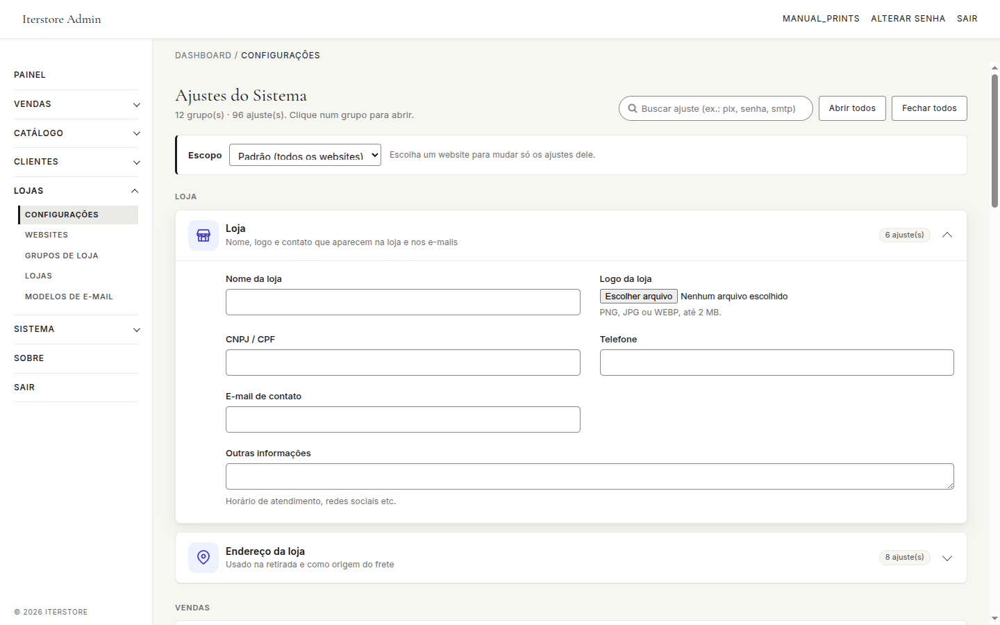
- Escopo: "Padrão" vale para todas as lojas; escolhendo um website você muda só os ajustes dele. Marque "Usar o valor padrão" para herdar.
- Buscar ajuste: digite uma palavra (pix, senha, smtp) e aparecem só os ajustes que a contêm.
- Cada campo alterado ganha um ponto laranja e uma barra com Descartar e Salvar aparece embaixo.
- O cabeçalho de cada grupo mostra a situação sem abrir (ex.: "Formas ligadas: 3 de 5").
- Senhas gravadas aparecem com a marca "salva" e nunca são exibidas.
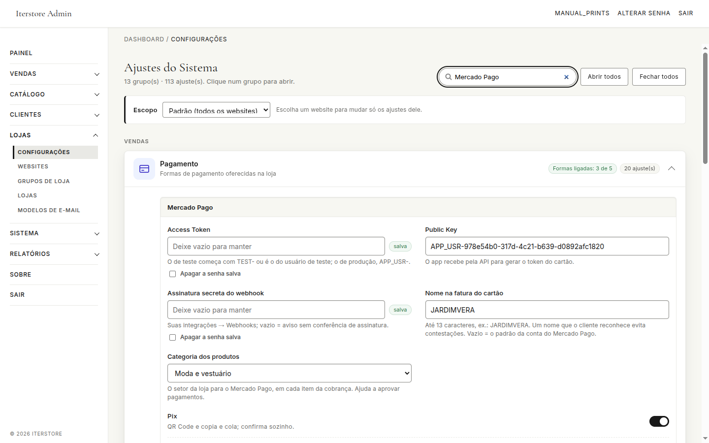
9.2 Websites, grupos e lojas
A hierarquia é Website → Grupo de loja → Loja. Cada website é uma loja com numeração de pedidos própria (ex.: RJ000001, SP000001), seus produtos, clientes, categorias e estoque. Só existe um website padrão, e um website com cadastros ligados não pode ser removido.
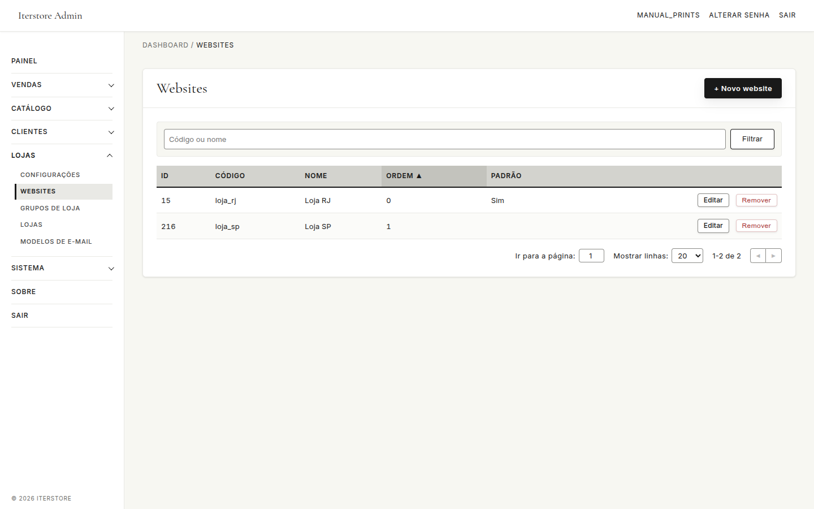
9.3 E-mails
O sistema envia e-mails automaticamente: boas-vindas, pedido recebido, pagamento confirmado, pedido enviado (com rastreio), cancelamento, comentários e redefinição de senha. Todos levam a logo da loja.
- Lojas → Modelos de e-mail: edite assunto e texto de cada e-mail, com Pré-visualizar e Restaurar padrão.
- Lojas → Configurações → E-mail: remetente, servidor SMTP e o botão Enviar e-mail de teste.
10. Sistema
10.1 Usuários e perfis
Sistema → Usuários admin cadastra as pessoas que usam o painel. Sistema → Perfis define o que cada perfil pode acessar.
- O menu mostra só o que o perfil permite; uma tela sem permissão mostra "acesso negado".
- As permissões de pedidos são separadas: ver e comentar, confirmar pagamento, registrar entrega, cancelar e criar pelo painel — assim é possível dar a cada pessoa só a parte do atendimento que ela faz.
- Ninguém consegue desativar, remover ou trocar o perfil da própria conta, nem tirar do próprio perfil o acesso a Perfis. Essas mudanças precisam de outro administrador.
- Quem cuida de Perfis ou Usuários só pode dar as permissões que o próprio perfil tem. Também não pode alterar, trocar a senha ou remover um perfil ou usuário com mais acesso que o seu. Assim, cuidar dos usuários não vira acesso total ao sistema. A mensagem "Você só pode dar ou alterar permissões que o seu próprio perfil tem" explica a recusa.
- Para integrações (sistemas externos), crie um usuário e um perfil próprios, com só as permissões necessárias.
10.2 E-mails enviados
Sistema → E-mails enviados: histórico de tudo o que o sistema enviou, com filtros por situação, destinatário e data. Abrindo um e-mail você vê o conteúdo, o erro (se houve) e pode Reenviar.
10.3 Log de operações (auditoria)
Sistema → Log de operações registra quem fez o quê no painel ou pela API: logins, senhas erradas, bloqueios, produtos, variações, estoque, clientes, configurações e exportações de relatórios de clientes e financeiros — com o valor de antes e o de depois de cada campo.
- Senhas aparecem só como "definida" ou "alterada", nunca o valor.
- O log é somente leitura: não pode ser editado nem apagado pela tela.
- No fim da edição de produto e de cliente, o bloco Histórico de alterações mostra as 10 últimas mudanças daquele cadastro.
10.4 API (GraphiQL)
Sistema → API (GraphiQL) é uma ferramenta técnica para testar a API usada pelo app. Destina-se à equipe de desenvolvimento.
10.5 Chaves da API
Sistema → Chaves da API controla quais aplicativos e sites podem usar a API da loja. Sem essa proteção, qualquer programa pode ler o catálogo e os preços automaticamente.
- Digite o nome do aplicativo ou site (ex.: "App Jardim Vera") e clique em + Nova chave.
- Copie a chave mostrada e passe para quem cuida do aplicativo. Ela só aparece uma vez; depois, a lista mostra só o começo e o fim dela.
- Quando o aplicativo já estiver enviando a chave, ligue Exigir chave do aplicativo em Configurações → Ajustes do sistema → API. A partir daí, quem chamar a API sem uma chave ativa é recusado.
A coluna "Último uso" mostra se a chave está sendo usada. Se uma chave vazar, clique em Revogar: ela para de funcionar na hora (crie uma nova para o aplicativo antes). Criar e revogar ficam no log de operações.
Outras proteções em Configurações
- Requisições à API por IP (padrão 240 por minuto) e Cotações de frete por IP (padrão 20): bloqueiam por um minuto quem chama a API em excesso.
- Usar só HTTPS (Geral): ligue quando o site tiver certificado. Endereços com http passam para https automaticamente.
- Proxies confiáveis (Geral): preenchido pela equipe técnica quando o site fica atrás de um balanceador ou CDN.
- Mensagens do cliente por minuto (Clientes, padrão 10): quantas mensagens um cliente pode mandar pelo app num minuto. As respostas da loja não têm limite.
- Complexidade máxima e Tamanho máximo da chamada (API): recusam consultas grandes demais. Os padrões servem para o app; só mude com a equipe técnica.
10.6 Backup
Sistema → Backup mostra se as cópias de segurança estão em dia. O sistema copia sozinho o banco de dados (pedidos, clientes, produtos, configurações), as imagens enviadas e os arquivos de configuração do servidor. As cópias são compactadas e cifradas, e cada uma guarda só o que mudou desde a anterior, então ocupam pouco espaço.
- Fazer backup agora: pede uma cópia fora de hora (antes de uma mudança grande, por exemplo). Ela começa em até 1 minuto; atualize a tela para ver o resultado.
- Teste de restauração: uma vez por mês, o sistema restaura sozinho a última cópia num banco de teste, confere se todos os dados voltaram e apaga o teste. Um teste que falha aparece em vermelho.
- Avisos: backup que falhou, atrasado (mais de 3 vezes o intervalo escolhido), desligado ou kit de recuperação não guardado aparecem nesta tela e no topo do Dashboard para o perfil Administrador. Com um e-mail em "Avisar falhas por e-mail para", a primeira falha também chega por e-mail. Para não ver nada sobre o backup no Dashboard, desligue "Avisos do backup no Dashboard" em Configurações → Backup: os avisos continuam nesta tela e no e-mail.
- O
.zipde uma cópia, para abrir em qualquer computador, é gerado pelo responsável técnico no servidor.
Configurações → Backup
- Fazer backup a cada: de 1 hora a 1 semana; no diário e no semanal, também o horário e o dia. Quanto maior o intervalo, mais pedidos se perdem se o servidor cair entre duas cópias.
- Quantas cópias guardar: uma por hora das últimas 24 horas, uma por dia dos últimos 7 dias, uma por semana das últimas 4 semanas e uma por mês dos últimos 12 meses (padrões). As mais velhas são apagadas sozinhas, uma vez por dia. Ao menos um nível precisa ficar acima de 0.
- Guardar em: "Só neste servidor" (padrão), Backblaze B2 ou S3 compatível (AWS, Cloudflare R2 e outros). A cópia só no servidor protege contra erros, não contra perder o servidor: enquanto ela for a única, a tela avisa. Para o destino externo, crie um bucket privado e uma chave que só alcança esse bucket, e preencha bucket, ID da chave e chave secreta (gravada cifrada, nunca reexibida).
- Trocar o destino não leva as cópias antigas: a próxima começa do zero no destino novo.
- Estes ajustes só aparecem para quem tem a permissão Backup no perfil.
Kit de recuperação
Para restaurar uma cópia é preciso a senha do backup e a chave das senhas salvas, que ficam no próprio servidor. Se o servidor for perdido, elas vão junto: por isso precisam de uma cópia fora dele, o kit de recuperação.
- Só o perfil Administrador abre o kit, em Sistema → Backup → Abrir o kit, digitando a própria senha de novo. Cada abertura fica no log de operações.
- O kit mostra a senha do backup, a chave do
env.ini, o destino e os passos para restaurar num servidor novo. - Guarde em dois lugares: no gerenciador de senhas da empresa, num cofre que duas pessoas acessam, e impresso, em envelope lacrado, fora do local do servidor. Depois clique em "Já guardei nos dois lugares".
- Se a senha ou a chave mudarem, o aviso volta, para o kit ser guardado de novo.
10.7 Sobre
O item Sobre do menu mostra a versão do sistema e os dados de quem o desenvolveu.
11. Rotinas automáticas
Algumas tarefas rodam sozinhas no servidor, sem ninguém precisar clicar. Elas são instaladas pelo responsável técnico na implantação:
| Rotina | Frequência | O que faz |
|---|---|---|
| Envio de e-mails | A cada minuto | Envia a fila de e-mails; em caso de falha, tenta de novo. |
| Pedidos não pagos | De hora em hora | Cancela os pedidos que passaram do prazo de pagamento e devolve o estoque. |
| Conferência do Mercado Pago | A cada 10 minutos | Confirma pagamentos que ainda estejam em aberto. |
| Limpeza de logs | Diária | Apaga logs mais antigos que o prazo configurado. |
| Relatórios por e-mail | Diária | Quando ligado em Configurações, envia os relatórios na segunda-feira (semanal) ou no dia 1º (mensal). |
| Backup | A cada minuto (copia no intervalo escolhido) | Faz as cópias de segurança, apaga as velhas uma vez por dia e testa uma restauração por mês (item 10.6). |
| Carrinhos abandonados | Diária | Apaga carrinhos de visitantes sem uso há mais de 30 dias. |
| Marketing por e-mail | A cada 15 minutos | Procura os clientes de cada regra ligada, cria as sugestões e envia as aprovadas dentro do horário (item 6.5). |
12. Dúvidas frequentes
Fiquei bloqueado depois de errar a senha. E agora?
Aguarde o tempo de bloqueio (padrão 15 minutos) ou use "Esqueci minha senha" — redefinir a senha libera o acesso na hora.
Não consigo salvar o produto: "O produto não tem categoria no website X".
Cada website marcado precisa de ao menos uma categoria dele. Marque uma categoria daquele website ou desmarque o website.
O produto não aparece no app.
Confira se ele está Ativo, se está no website certo, se a categoria (e a categoria pai) está ativa e, se o app usa a ordem de Catálogo → Mobile, se a categoria está com "Mostrar no app" ligado.
O cliente pagou o Pix mas o pedido continua "Aguardando pagamento".
No Mercado Pago a confirmação é automática em poucos minutos. No Pix manual, abra o pedido e clique em Confirmar pagamento.
Quero saber quem alterou o preço de um produto.
Abra o produto e veja o bloco Histórico de alterações, ou consulte Sistema → Log de operações filtrando pelo SKU.
Um e-mail não chegou ao cliente.
Veja em Sistema → E-mails enviados a situação e o erro; se precisar, use Reenviar.
Liguei uma regra de Marketing e nenhuma sugestão apareceu.
A busca roda a cada 15 minutos. Só entram clientes que marcaram "Aceita receber ofertas por e-mail" e que não receberam outro e-mail de marketing nos últimos dias. Carrinhos parados há muito tempo também ficam de fora, para a regra não disparar lembretes velhos ao ser ligada.
Iter Store
Projetado e desenvolvido por Esmerio Neto
EGSN · esmerioneto@gmail.com
© 2026 EGSN. Todos os direitos reservados.